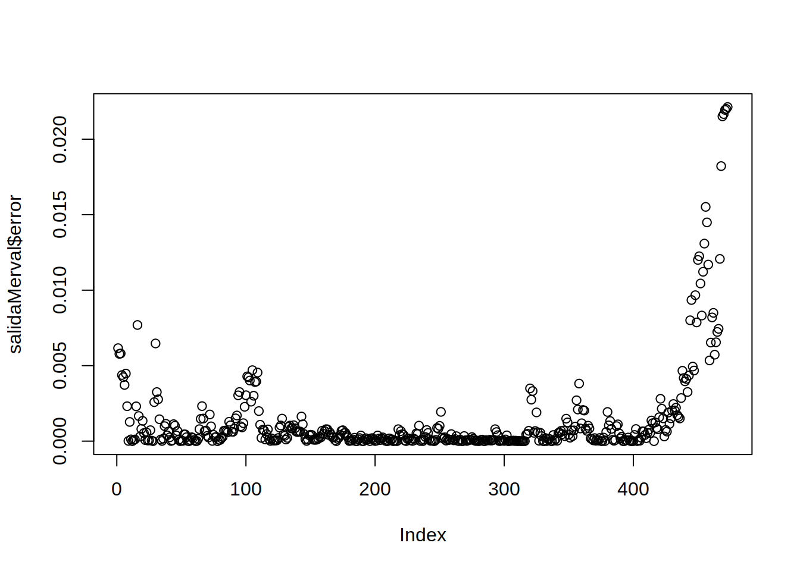
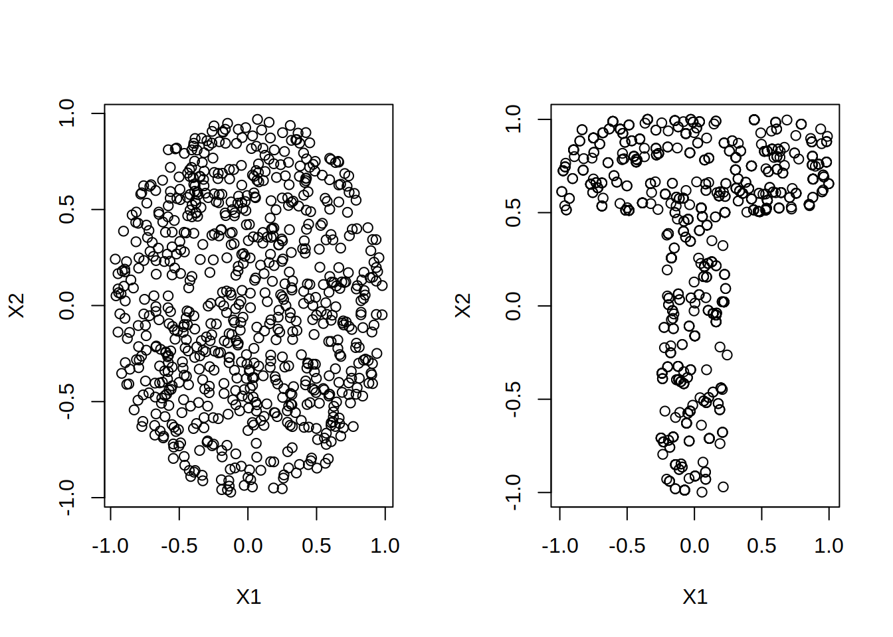
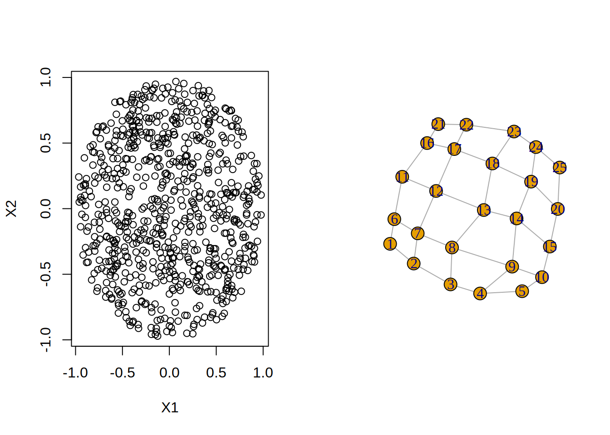
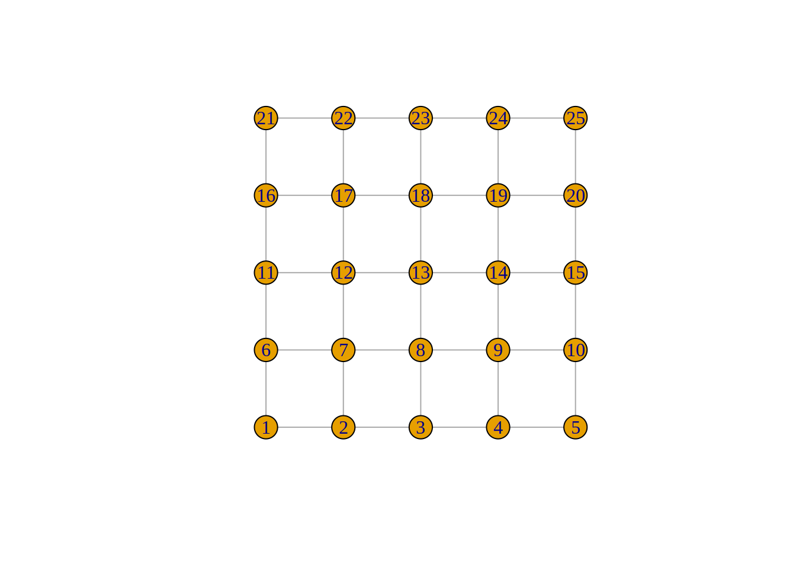
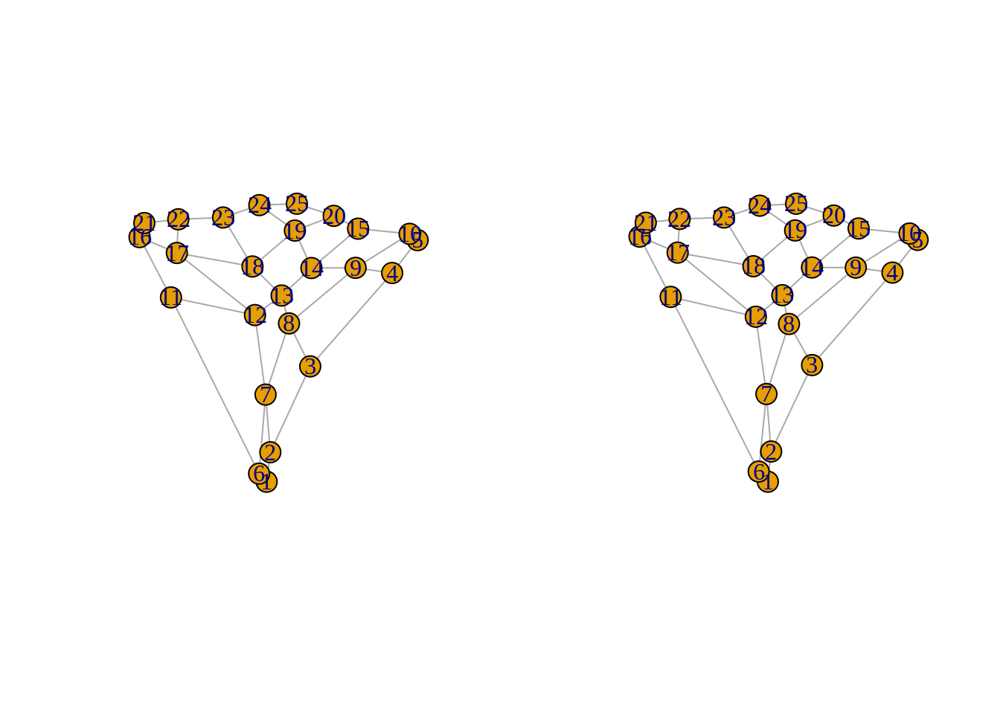
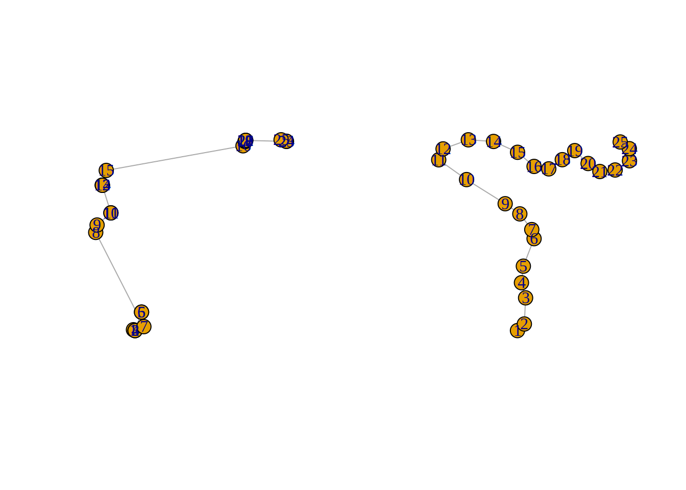

Guía 2 Guía 2
La implementación del perceptron simple RBF se encuentra en el archivo PerceptronSimpleRBF_g2.R.
La implementacion de la red RBF se localiza en el archivo RedRBF_g2.R.
2.1 Ejercicio 1
2.1.1 Resolución del problema XOR con una red neuronal RBF
- Lectura de los patrones de entrenamiento
XOR_trn <- read_csv("../../PUBLICO/Encuentro 1/Práctica/data/XOR_trn.csv", col_names = FALSE)
XOR_tst <- read_csv("../../PUBLICO/Encuentro 1/Práctica/data/XOR_tst.csv", col_names = FALSE)- Selección de parámetros y entrenamiento de perceptrón
En este caso se utilizan 4 gausianas por la distribución de los datos.
datos_x <- XOR_trn[,c(1,2)]
datos_y <- XOR_trn[,3]
modeloRBF <- redRBF(datos_x, datos_y, nroGausianas = 4, funcion = "sigmo")## Epoca: 1 - Tasa: 0.749 - Error: 0.975136931564991
## Epoca: 2 - Tasa: 1 - Error: 0.818319329810593- Prueba con datos de test
datos_x <- XOR_tst[,c(1,2)]
datos_y <- XOR_tst[,3]
salida <- aplicarRedRBF(modeloRBF, datos_x, datos_y)
salida$tasa## [1] 12.1.2 Resolución del problema Iris con una red neuronal RBF
- Lectura de los patrones de entrenamiento
- Selección de parámetros y entrenamiento de perceptrón
datos_x <- irisbin[,c(1,2,3,4)]
datos_y <- irisbin[,c(5,6,7)]
modeloRBF <- redRBF(datos_x, datos_y, nroGausianas = 10, funcion = "sigmo", pnu = 0.2,
pepoca = 200, pcritFinalizacion = 0.9)## Epoca: 1 - Tasa: 0.7 - Error: 0.89449489107328
## Epoca: 2 - Tasa: 0.7 - Error: 0.864093486816453
## Epoca: 3 - Tasa: 0.7 - Error: 0.862629752685685
## Epoca: 4 - Tasa: 0.7 - Error: 0.861197468977281
## Epoca: 5 - Tasa: 0.7 - Error: 0.859768029477902
## Epoca: 6 - Tasa: 0.7 - Error: 0.858341301170202
## Epoca: 7 - Tasa: 0.7 - Error: 0.856917318865837
## Epoca: 8 - Tasa: 0.7 - Error: 0.855496117547486
## Epoca: 9 - Tasa: 0.7 - Error: 0.854077731382982
## Epoca: 10 - Tasa: 0.7 - Error: 0.852662193726943
## Epoca: 11 - Tasa: 0.7 - Error: 0.851249537128268
## Epoca: 12 - Tasa: 0.7 - Error: 0.849839793337777
## Epoca: 13 - Tasa: 0.7 - Error: 0.848432993315936
## Epoca: 14 - Tasa: 0.7 - Error: 0.847029167240685
## Epoca: 15 - Tasa: 0.7 - Error: 0.845628344515339
## Epoca: 16 - Tasa: 0.7 - Error: 0.844230553776579
## Epoca: 17 - Tasa: 0.7 - Error: 0.842835822902504
## Epoca: 18 - Tasa: 0.7 - Error: 0.841444179020752
## Epoca: 19 - Tasa: 0.7 - Error: 0.840055648516686
## Epoca: 20 - Tasa: 0.7 - Error: 0.83867025704163
## Epoca: 21 - Tasa: 0.7 - Error: 0.837288029521153
## Epoca: 22 - Tasa: 0.7 - Error: 0.8359089901634
## Epoca: 23 - Tasa: 0.7 - Error: 0.834533162467464
## Epoca: 24 - Tasa: 0.7 - Error: 0.833160569231785
## Epoca: 25 - Tasa: 0.7 - Error: 0.831791232562583
## Epoca: 26 - Tasa: 0.7 - Error: 0.830425173882317
## Epoca: 27 - Tasa: 0.7 - Error: 0.829062413938159
## Epoca: 28 - Tasa: 0.7 - Error: 0.827702972810487
## Epoca: 29 - Tasa: 0.7 - Error: 0.826346869921388
## Epoca: 30 - Tasa: 0.7 - Error: 0.82499412404317
## Epoca: 31 - Tasa: 0.7 - Error: 0.823644753306874
## Epoca: 32 - Tasa: 0.7 - Error: 0.822298775210791
## Epoca: 33 - Tasa: 0.7 - Error: 0.820956206628968
## Epoca: 34 - Tasa: 0.7 - Error: 0.819617063819711
## Epoca: 35 - Tasa: 0.7 - Error: 0.818281362434076
## Epoca: 36 - Tasa: 0.7 - Error: 0.816949117524343
## Epoca: 37 - Tasa: 0.7 - Error: 0.815620343552478
## Epoca: 38 - Tasa: 0.7 - Error: 0.814295054398566
## Epoca: 39 - Tasa: 0.7 - Error: 0.812973263369226
## Epoca: 40 - Tasa: 0.7 - Error: 0.811654983206
## Epoca: 41 - Tasa: 0.7 - Error: 0.81034022609371
## Epoca: 42 - Tasa: 0.7 - Error: 0.809029003668779
## Epoca: 43 - Tasa: 0.7 - Error: 0.80772132702753
## Epoca: 44 - Tasa: 0.7 - Error: 0.806417206734431
## Epoca: 45 - Tasa: 0.7 - Error: 0.805116652830319
## Epoca: 46 - Tasa: 0.7 - Error: 0.803819674840565
## Epoca: 47 - Tasa: 0.7 - Error: 0.802526281783209
## Epoca: 48 - Tasa: 0.7 - Error: 0.801236482177041
## Epoca: 49 - Tasa: 0.7 - Error: 0.799950284049637
## Epoca: 50 - Tasa: 0.7 - Error: 0.798667694945347
## Epoca: 51 - Tasa: 0.7 - Error: 0.797388721933231
## Epoca: 52 - Tasa: 0.7 - Error: 0.796113371614938
## Epoca: 53 - Tasa: 0.7 - Error: 0.794841650132535
## Epoca: 54 - Tasa: 0.7 - Error: 0.793573563176281
## Epoca: 55 - Tasa: 0.7 - Error: 0.792309115992338
## Epoca: 56 - Tasa: 0.7 - Error: 0.791048313390427
## Epoca: 57 - Tasa: 0.7 - Error: 0.789791159751421
## Epoca: 58 - Tasa: 0.7 - Error: 0.788537659034883
## Epoca: 59 - Tasa: 0.7 - Error: 0.787287814786532
## Epoca: 60 - Tasa: 0.7 - Error: 0.786041630145652
## Epoca: 61 - Tasa: 0.7 - Error: 0.784799107852434
## Epoca: 62 - Tasa: 0.7 - Error: 0.783560250255252
## Epoca: 63 - Tasa: 0.7 - Error: 0.782325059317876
## Epoca: 64 - Tasa: 0.7 - Error: 0.781093536626609
## Epoca: 65 - Tasa: 0.7 - Error: 0.779865683397368
## Epoca: 66 - Tasa: 0.7 - Error: 0.778641500482686
## Epoca: 67 - Tasa: 0.7 - Error: 0.777420988378648
## Epoca: 68 - Tasa: 0.7 - Error: 0.77620414723176
## Epoca: 69 - Tasa: 0.7 - Error: 0.77499097684574
## Epoca: 70 - Tasa: 0.7 - Error: 0.773781476688248
## Epoca: 71 - Tasa: 0.7 - Error: 0.772575645897534
## Epoca: 72 - Tasa: 0.7 - Error: 0.77137348328902
## Epoca: 73 - Tasa: 0.7 - Error: 0.77017498736181
## Epoca: 74 - Tasa: 0.7 - Error: 0.768980156305124
## Epoca: 75 - Tasa: 0.7 - Error: 0.767788988004662
## Epoca: 76 - Tasa: 0.7 - Error: 0.766601480048893
## Epoca: 77 - Tasa: 0.7 - Error: 0.765417629735272
## Epoca: 78 - Tasa: 0.7 - Error: 0.764237434076384
## Epoca: 79 - Tasa: 0.7 - Error: 0.76306088980601
## Epoca: 80 - Tasa: 0.7 - Error: 0.761887993385127
## Epoca: 81 - Tasa: 0.7 - Error: 0.760718741007827
## Epoca: 82 - Tasa: 0.7 - Error: 0.759553128607168
## Epoca: 83 - Tasa: 0.7 - Error: 0.758391151860947
## Epoca: 84 - Tasa: 0.7 - Error: 0.757232806197404
## Epoca: 85 - Tasa: 0.7 - Error: 0.756078086800846
## Epoca: 86 - Tasa: 0.7 - Error: 0.754926988617207
## Epoca: 87 - Tasa: 0.7 - Error: 0.753779506359525
## Epoca: 88 - Tasa: 0.7 - Error: 0.752635634513351
## Epoca: 89 - Tasa: 0.7 - Error: 0.75149536734209
## Epoca: 90 - Tasa: 0.7 - Error: 0.750358698892255
## Epoca: 91 - Tasa: 0.7 - Error: 0.74922562299867
## Epoca: 92 - Tasa: 0.7 - Error: 0.748096133289576
## Epoca: 93 - Tasa: 0.7 - Error: 0.74697022319169
## Epoca: 94 - Tasa: 0.7 - Error: 0.745847885935173
## Epoca: 95 - Tasa: 0.7 - Error: 0.744729114558539
## Epoca: 96 - Tasa: 0.7 - Error: 0.743613901913489
## Epoca: 97 - Tasa: 0.7 - Error: 0.742502240669673
## Epoca: 98 - Tasa: 0.7 - Error: 0.741394123319387
## Epoca: 99 - Tasa: 0.7 - Error: 0.740289542182195
## Epoca: 100 - Tasa: 0.7 - Error: 0.739188489409489
## Epoca: 101 - Tasa: 0.7 - Error: 0.738090956988969
## Epoca: 102 - Tasa: 0.7 - Error: 0.736996936749071
## Epoca: 103 - Tasa: 0.7 - Error: 0.735906420363312
## Epoca: 104 - Tasa: 0.7 - Error: 0.734819399354575
## Epoca: 105 - Tasa: 0.7 - Error: 0.733735865099329
## Epoca: 106 - Tasa: 0.7 - Error: 0.73265580883178
## Epoca: 107 - Tasa: 0.7 - Error: 0.731579221647956
## Epoca: 108 - Tasa: 0.7 - Error: 0.730506094509727
## Epoca: 109 - Tasa: 0.7 - Error: 0.729436418248763
## Epoca: 110 - Tasa: 0.7 - Error: 0.728370183570426
## Epoca: 111 - Tasa: 0.7 - Error: 0.727307381057596
## Epoca: 112 - Tasa: 0.7 - Error: 0.726248001174443
## Epoca: 113 - Tasa: 0.7 - Error: 0.725192034270125
## Epoca: 114 - Tasa: 0.7 - Error: 0.724139470582431
## Epoca: 115 - Tasa: 0.7 - Error: 0.723090300241364
## Epoca: 116 - Tasa: 0.7 - Error: 0.72204451327266
## Epoca: 117 - Tasa: 0.7 - Error: 0.721002099601249
## Epoca: 118 - Tasa: 0.7 - Error: 0.719963049054653
## Epoca: 119 - Tasa: 0.7 - Error: 0.718927351366334
## Epoca: 120 - Tasa: 0.7 - Error: 0.717894996178973
## Epoca: 121 - Tasa: 0.7 - Error: 0.716865973047697
## Epoca: 122 - Tasa: 0.7 - Error: 0.715840271443255
## Epoca: 123 - Tasa: 0.7 - Error: 0.714817880755122
## Epoca: 124 - Tasa: 0.7 - Error: 0.713798790294565
## Epoca: 125 - Tasa: 0.7 - Error: 0.71278298929764
## Epoca: 126 - Tasa: 0.7 - Error: 0.711770466928146
## Epoca: 127 - Tasa: 0.7 - Error: 0.710761212280515
## Epoca: 128 - Tasa: 0.7 - Error: 0.709755214382654
## Epoca: 129 - Tasa: 0.7 - Error: 0.708752462198739
## Epoca: 130 - Tasa: 0.7 - Error: 0.707752944631944
## Epoca: 131 - Tasa: 0.7 - Error: 0.706756650527135
## Epoca: 132 - Tasa: 0.7 - Error: 0.705763568673499
## Epoca: 133 - Tasa: 0.7 - Error: 0.704773687807134
## Epoca: 134 - Tasa: 0.7 - Error: 0.70378699661358
## Epoca: 135 - Tasa: 0.7 - Error: 0.702803483730312
## Epoca: 136 - Tasa: 0.7 - Error: 0.701823137749171
## Epoca: 137 - Tasa: 0.7 - Error: 0.700845947218764
## Epoca: 138 - Tasa: 0.7 - Error: 0.699871900646804
## Epoca: 139 - Tasa: 0.7 - Error: 0.698900986502407
## Epoca: 140 - Tasa: 0.7 - Error: 0.697933193218347
## Epoca: 141 - Tasa: 0.7 - Error: 0.696968509193264
## Epoca: 142 - Tasa: 0.7 - Error: 0.696006922793825
## Epoca: 143 - Tasa: 0.7 - Error: 0.695048422356844
## Epoca: 144 - Tasa: 0.7 - Error: 0.69409299619136
## Epoca: 145 - Tasa: 0.7 - Error: 0.693140632580666
## Epoca: 146 - Tasa: 0.7 - Error: 0.692191319784305
## Epoca: 147 - Tasa: 0.7 - Error: 0.691245046040016
## Epoca: 148 - Tasa: 0.7 - Error: 0.690301799565647
## Epoca: 149 - Tasa: 0.7 - Error: 0.689361568561019
## Epoca: 150 - Tasa: 0.7 - Error: 0.688424341209761
## Epoca: 151 - Tasa: 0.7 - Error: 0.687490105681094
## Epoca: 152 - Tasa: 0.7 - Error: 0.686558850131587
## Epoca: 153 - Tasa: 0.7 - Error: 0.685630562706866
## Epoca: 154 - Tasa: 0.7 - Error: 0.684705231543295
## Epoca: 155 - Tasa: 0.7 - Error: 0.683782844769613
## Epoca: 156 - Tasa: 0.7 - Error: 0.682863390508536
## Epoca: 157 - Tasa: 0.7 - Error: 0.681946856878325
## Epoca: 158 - Tasa: 0.7 - Error: 0.681033231994319
## Epoca: 159 - Tasa: 0.7 - Error: 0.68012250397043
## Epoca: 160 - Tasa: 0.7 - Error: 0.67921466092061
## Epoca: 161 - Tasa: 0.7 - Error: 0.678309690960278
## Epoca: 162 - Tasa: 0.7 - Error: 0.677407582207717
## Epoca: 163 - Tasa: 0.7 - Error: 0.676508322785439
## Epoca: 164 - Tasa: 0.7 - Error: 0.675611900821515
## Epoca: 165 - Tasa: 0.7 - Error: 0.674718304450881
## Epoca: 166 - Tasa: 0.7 - Error: 0.6738275218166
## Epoca: 167 - Tasa: 0.7 - Error: 0.67293954107111
## Epoca: 168 - Tasa: 0.7 - Error: 0.672054350377424
## Epoca: 169 - Tasa: 0.7 - Error: 0.671171937910317
## Epoca: 170 - Tasa: 0.7 - Error: 0.670292291857475
## Epoca: 171 - Tasa: 0.7 - Error: 0.669415400420615
## Epoca: 172 - Tasa: 0.7 - Error: 0.668541251816581
## Epoca: 173 - Tasa: 0.7 - Error: 0.66766983427841
## Epoca: 174 - Tasa: 0.7 - Error: 0.666801136056373
## Epoca: 175 - Tasa: 0.7 - Error: 0.665935145418987
## Epoca: 176 - Tasa: 0.7 - Error: 0.665071850653999
## Epoca: 177 - Tasa: 0.7 - Error: 0.664211240069353
## Epoca: 178 - Tasa: 0.7 - Error: 0.663353301994119
## Epoca: 179 - Tasa: 0.7 - Error: 0.66249802477941
## Epoca: 180 - Tasa: 0.7 - Error: 0.661645396799261
## Epoca: 181 - Tasa: 0.7 - Error: 0.660795406451502
## Epoca: 182 - Tasa: 0.7 - Error: 0.659948042158584
## Epoca: 183 - Tasa: 0.7 - Error: 0.659103292368405
## Epoca: 184 - Tasa: 0.7 - Error: 0.6582611455551
## Epoca: 185 - Tasa: 0.7 - Error: 0.657421590219808
## Epoca: 186 - Tasa: 0.7 - Error: 0.656584614891424
## Epoca: 187 - Tasa: 0.7 - Error: 0.655750208127328
## Epoca: 188 - Tasa: 0.7 - Error: 0.654918358514087
## Epoca: 189 - Tasa: 0.72 - Error: 0.65408905466814
## Epoca: 190 - Tasa: 0.72 - Error: 0.653262285236468
## Epoca: 191 - Tasa: 0.72 - Error: 0.652438038897235
## Epoca: 192 - Tasa: 0.72 - Error: 0.651616304360411
## Epoca: 193 - Tasa: 0.72 - Error: 0.650797070368383
## Epoca: 194 - Tasa: 0.72 - Error: 0.649980325696542
## Epoca: 195 - Tasa: 0.72 - Error: 0.649166059153845
## Epoca: 196 - Tasa: 0.72 - Error: 0.648354259583373
## Epoca: 197 - Tasa: 0.72 - Error: 0.64754491586286
## Epoca: 198 - Tasa: 0.72 - Error: 0.646738016905207
## Epoca: 199 - Tasa: 0.72 - Error: 0.645933551658983
## Epoca: 200 - Tasa: 0.72 - Error: 0.645131509108903
## Epoca: 1 - Tasa: 0.713333333333333 - Error: 0.862884633639659
## Epoca: 2 - Tasa: 0.713333333333333 - Error: 0.826876287596203
## Epoca: 3 - Tasa: 0.713333333333333 - Error: 0.825286206817963
## Epoca: 4 - Tasa: 0.713333333333333 - Error: 0.82364745916709
## Epoca: 5 - Tasa: 0.713333333333333 - Error: 0.822011185798905
## Epoca: 6 - Tasa: 0.713333333333333 - Error: 0.82037791805056
## Epoca: 7 - Tasa: 0.713333333333333 - Error: 0.818747723655696
## Epoca: 8 - Tasa: 0.713333333333333 - Error: 0.817120664853259
## Epoca: 9 - Tasa: 0.713333333333333 - Error: 0.81549680242582
## Epoca: 10 - Tasa: 0.713333333333333 - Error: 0.813876195747633
## Epoca: 11 - Tasa: 0.713333333333333 - Error: 0.812258902798518
## Epoca: 12 - Tasa: 0.713333333333333 - Error: 0.810644980177685
## Epoca: 13 - Tasa: 0.713333333333333 - Error: 0.809034483117791
## Epoca: 14 - Tasa: 0.713333333333333 - Error: 0.807427465499211
## Epoca: 15 - Tasa: 0.713333333333333 - Error: 0.805823979864483
## Epoca: 16 - Tasa: 0.713333333333333 - Error: 0.804224077432943
## Epoca: 17 - Tasa: 0.713333333333333 - Error: 0.802627808115498
## Epoca: 18 - Tasa: 0.713333333333333 - Error: 0.801035220529555
## Epoca: 19 - Tasa: 0.713333333333333 - Error: 0.799446362014055
## Epoca: 20 - Tasa: 0.713333333333333 - Error: 0.797861278644631
## Epoca: 21 - Tasa: 0.713333333333333 - Error: 0.796280015248852
## Epoca: 22 - Tasa: 0.713333333333333 - Error: 0.794702615421545
## Epoca: 23 - Tasa: 0.713333333333333 - Error: 0.793129121540192
## Epoca: 24 - Tasa: 0.713333333333333 - Error: 0.791559574780375
## Epoca: 25 - Tasa: 0.713333333333333 - Error: 0.789994015131267
## Epoca: 26 - Tasa: 0.713333333333333 - Error: 0.788432481411154
## Epoca: 27 - Tasa: 0.713333333333333 - Error: 0.786875011282978
## Epoca: 28 - Tasa: 0.713333333333333 - Error: 0.785321641269891
## Epoca: 29 - Tasa: 0.713333333333333 - Error: 0.783772406770809
## Epoca: 30 - Tasa: 0.713333333333333 - Error: 0.782227342075958
## Epoca: 31 - Tasa: 0.713333333333333 - Error: 0.780686480382403
## Epoca: 32 - Tasa: 0.713333333333333 - Error: 0.779149853809553
## Epoca: 33 - Tasa: 0.713333333333333 - Error: 0.77761749341463
## Epoca: 34 - Tasa: 0.713333333333333 - Error: 0.776089429208099
## Epoca: 35 - Tasa: 0.713333333333333 - Error: 0.774565690169052
## Epoca: 36 - Tasa: 0.713333333333333 - Error: 0.77304630426053
## Epoca: 37 - Tasa: 0.713333333333333 - Error: 0.771531298444796
## Epoca: 38 - Tasa: 0.713333333333333 - Error: 0.770020698698531
## Epoca: 39 - Tasa: 0.713333333333333 - Error: 0.768514530027961
## Epoca: 40 - Tasa: 0.713333333333333 - Error: 0.76701281648391
## Epoca: 41 - Tasa: 0.713333333333333 - Error: 0.765515581176761
## Epoca: 42 - Tasa: 0.713333333333333 - Error: 0.764022846291344
## Epoca: 43 - Tasa: 0.713333333333333 - Error: 0.762534633101715
## Epoca: 44 - Tasa: 0.713333333333333 - Error: 0.761050961985857
## Epoca: 45 - Tasa: 0.713333333333333 - Error: 0.759571852440262
## Epoca: 46 - Tasa: 0.713333333333333 - Error: 0.758097323094431
## Epoca: 47 - Tasa: 0.713333333333333 - Error: 0.756627391725248
## Epoca: 48 - Tasa: 0.713333333333333 - Error: 0.755162075271256
## Epoca: 49 - Tasa: 0.713333333333333 - Error: 0.753701389846816
## Epoca: 50 - Tasa: 0.713333333333333 - Error: 0.752245350756153
## Epoca: 51 - Tasa: 0.713333333333333 - Error: 0.750793972507279
## Epoca: 52 - Tasa: 0.713333333333333 - Error: 0.7493472688258
## Epoca: 53 - Tasa: 0.713333333333333 - Error: 0.747905252668605
## Epoca: 54 - Tasa: 0.713333333333333 - Error: 0.746467936237414
## Epoca: 55 - Tasa: 0.713333333333333 - Error: 0.745035330992222
## Epoca: 56 - Tasa: 0.713333333333333 - Error: 0.743607447664598
## Epoca: 57 - Tasa: 0.713333333333333 - Error: 0.742184296270863
## Epoca: 58 - Tasa: 0.713333333333333 - Error: 0.740765886125134
## Epoca: 59 - Tasa: 0.713333333333333 - Error: 0.739352225852237
## Epoca: 60 - Tasa: 0.713333333333333 - Error: 0.737943323400488
## Epoca: 61 - Tasa: 0.713333333333333 - Error: 0.736539186054339
## Epoca: 62 - Tasa: 0.713333333333333 - Error: 0.735139820446889
## Epoca: 63 - Tasa: 0.713333333333333 - Error: 0.73374523257226
## Epoca: 64 - Tasa: 0.713333333333333 - Error: 0.732355427797834
## Epoca: 65 - Tasa: 0.713333333333333 - Error: 0.730970410876363
## Epoca: 66 - Tasa: 0.713333333333333 - Error: 0.729590185957925
## Epoca: 67 - Tasa: 0.713333333333333 - Error: 0.728214756601759
## Epoca: 68 - Tasa: 0.713333333333333 - Error: 0.726844125787952
## Epoca: 69 - Tasa: 0.713333333333333 - Error: 0.725478295928996
## Epoca: 70 - Tasa: 0.713333333333333 - Error: 0.724117268881193
## Epoca: 71 - Tasa: 0.713333333333333 - Error: 0.722761045955943
## Epoca: 72 - Tasa: 0.713333333333333 - Error: 0.721409627930872
## Epoca: 73 - Tasa: 0.713333333333333 - Error: 0.720063015060838
## Epoca: 74 - Tasa: 0.713333333333333 - Error: 0.718721207088793
## Epoca: 75 - Tasa: 0.713333333333333 - Error: 0.717384203256505
## Epoca: 76 - Tasa: 0.713333333333333 - Error: 0.71605200231515
## Epoca: 77 - Tasa: 0.713333333333333 - Error: 0.714724602535759
## Epoca: 78 - Tasa: 0.713333333333333 - Error: 0.713402001719535
## Epoca: 79 - Tasa: 0.713333333333333 - Error: 0.71208419720803
## Epoca: 80 - Tasa: 0.713333333333333 - Error: 0.710771185893188
## Epoca: 81 - Tasa: 0.713333333333333 - Error: 0.709462964227255
## Epoca: 82 - Tasa: 0.713333333333333 - Error: 0.708159528232547
## Epoca: 83 - Tasa: 0.713333333333333 - Error: 0.706860873511096
## Epoca: 84 - Tasa: 0.713333333333333 - Error: 0.705566995254152
## Epoca: 85 - Tasa: 0.713333333333333 - Error: 0.70427788825156
## Epoca: 86 - Tasa: 0.713333333333333 - Error: 0.702993546900998
## Epoca: 87 - Tasa: 0.713333333333333 - Error: 0.701713965217092
## Epoca: 88 - Tasa: 0.713333333333333 - Error: 0.700439136840396
## Epoca: 89 - Tasa: 0.713333333333333 - Error: 0.699169055046242
## Epoca: 90 - Tasa: 0.713333333333333 - Error: 0.697903712753465
## Epoca: 91 - Tasa: 0.713333333333333 - Error: 0.696643102532995
## Epoca: 92 - Tasa: 0.713333333333333 - Error: 0.695387216616331
## Epoca: 93 - Tasa: 0.713333333333333 - Error: 0.694136046903876
## Epoca: 94 - Tasa: 0.713333333333333 - Error: 0.692889584973162
## Epoca: 95 - Tasa: 0.713333333333333 - Error: 0.691647822086937
## Epoca: 96 - Tasa: 0.713333333333333 - Error: 0.690410749201138
## Epoca: 97 - Tasa: 0.713333333333333 - Error: 0.689178356972741
## Epoca: 98 - Tasa: 0.713333333333333 - Error: 0.687950635767484
## Epoca: 99 - Tasa: 0.713333333333333 - Error: 0.686727575667475
## Epoca: 100 - Tasa: 0.713333333333333 - Error: 0.685509166478683
## Epoca: 101 - Tasa: 0.713333333333333 - Error: 0.684295397738303
## Epoca: 102 - Tasa: 0.713333333333333 - Error: 0.683086258722012
## Epoca: 103 - Tasa: 0.713333333333333 - Error: 0.681881738451101
## Epoca: 104 - Tasa: 0.713333333333333 - Error: 0.680681825699505
## Epoca: 105 - Tasa: 0.713333333333333 - Error: 0.679486509000703
## Epoca: 106 - Tasa: 0.713333333333333 - Error: 0.678295776654515
## Epoca: 107 - Tasa: 0.713333333333333 - Error: 0.67710961673379
## Epoca: 108 - Tasa: 0.713333333333333 - Error: 0.675928017090972
## Epoca: 109 - Tasa: 0.713333333333333 - Error: 0.674750965364569
## Epoca: 110 - Tasa: 0.713333333333333 - Error: 0.673578448985506
## Epoca: 111 - Tasa: 0.713333333333333 - Error: 0.672410455183374
## Epoca: 112 - Tasa: 0.713333333333333 - Error: 0.671246970992569
## Epoca: 113 - Tasa: 0.713333333333333 - Error: 0.670087983258332
## Epoca: 114 - Tasa: 0.713333333333333 - Error: 0.668933478642681
## Epoca: 115 - Tasa: 0.713333333333333 - Error: 0.667783443630241
## Epoca: 116 - Tasa: 0.713333333333333 - Error: 0.666637864533971
## Epoca: 117 - Tasa: 0.713333333333333 - Error: 0.665496727500797
## Epoca: 118 - Tasa: 0.713333333333333 - Error: 0.664360018517135
## Epoca: 119 - Tasa: 0.713333333333333 - Error: 0.663227723414326
## Epoca: 120 - Tasa: 0.713333333333333 - Error: 0.662099827873966
## Epoca: 121 - Tasa: 0.713333333333333 - Error: 0.660976317433146
## Epoca: 122 - Tasa: 0.713333333333333 - Error: 0.659857177489595
## Epoca: 123 - Tasa: 0.713333333333333 - Error: 0.658742393306726
## Epoca: 124 - Tasa: 0.713333333333333 - Error: 0.657631950018597
## Epoca: 125 - Tasa: 0.713333333333333 - Error: 0.656525832634772
## Epoca: 126 - Tasa: 0.713333333333333 - Error: 0.655424026045097
## Epoca: 127 - Tasa: 0.713333333333333 - Error: 0.654326515024385
## Epoca: 128 - Tasa: 0.713333333333333 - Error: 0.653233284237016
## Epoca: 129 - Tasa: 0.713333333333333 - Error: 0.652144318241445
## Epoca: 130 - Tasa: 0.713333333333333 - Error: 0.651059601494624
## Epoca: 131 - Tasa: 0.713333333333333 - Error: 0.649979118356349
## Epoca: 132 - Tasa: 0.713333333333333 - Error: 0.648902853093509
## Epoca: 133 - Tasa: 0.713333333333333 - Error: 0.647830789884263
## Epoca: 134 - Tasa: 0.713333333333333 - Error: 0.64676291282213
## Epoca: 135 - Tasa: 0.713333333333333 - Error: 0.645699205920004
## Epoca: 136 - Tasa: 0.713333333333333 - Error: 0.644639653114083
## Epoca: 137 - Tasa: 0.713333333333333 - Error: 0.643584238267723
## Epoca: 138 - Tasa: 0.713333333333333 - Error: 0.642532945175219
## Epoca: 139 - Tasa: 0.713333333333333 - Error: 0.641485757565499
## Epoca: 140 - Tasa: 0.713333333333333 - Error: 0.640442659105757
## Epoca: 141 - Tasa: 0.713333333333333 - Error: 0.639403633404999
## Epoca: 142 - Tasa: 0.713333333333333 - Error: 0.638368664017523
## Epoca: 143 - Tasa: 0.713333333333333 - Error: 0.637337734446328
## Epoca: 144 - Tasa: 0.713333333333333 - Error: 0.636310828146449
## Epoca: 145 - Tasa: 0.713333333333333 - Error: 0.635287928528219
## Epoca: 146 - Tasa: 0.713333333333333 - Error: 0.634269018960473
## Epoca: 147 - Tasa: 0.713333333333333 - Error: 0.63325408277367
## Epoca: 148 - Tasa: 0.713333333333333 - Error: 0.632243103262961
## Epoca: 149 - Tasa: 0.713333333333333 - Error: 0.631236063691182
## Epoca: 150 - Tasa: 0.713333333333333 - Error: 0.630232947291787
## Epoca: 151 - Tasa: 0.713333333333333 - Error: 0.629233737271714
## Epoca: 152 - Tasa: 0.713333333333333 - Error: 0.628238416814192
## Epoca: 153 - Tasa: 0.713333333333333 - Error: 0.627246969081482
## Epoca: 154 - Tasa: 0.713333333333333 - Error: 0.626259377217558
## Epoca: 155 - Tasa: 0.713333333333333 - Error: 0.625275624350731
## Epoca: 156 - Tasa: 0.713333333333333 - Error: 0.624295693596207
## Epoca: 157 - Tasa: 0.713333333333333 - Error: 0.623319568058595
## Epoca: 158 - Tasa: 0.713333333333333 - Error: 0.622347230834353
## Epoca: 159 - Tasa: 0.713333333333333 - Error: 0.621378665014176
## Epoca: 160 - Tasa: 0.713333333333333 - Error: 0.620413853685332
## Epoca: 161 - Tasa: 0.713333333333333 - Error: 0.619452779933943
## Epoca: 162 - Tasa: 0.713333333333333 - Error: 0.618495426847209
## Epoca: 163 - Tasa: 0.713333333333333 - Error: 0.617541777515583
## Epoca: 164 - Tasa: 0.713333333333333 - Error: 0.616591815034894
## Epoca: 165 - Tasa: 0.713333333333333 - Error: 0.615645522508413
## Epoca: 166 - Tasa: 0.713333333333333 - Error: 0.614702883048874
## Epoca: 167 - Tasa: 0.713333333333333 - Error: 0.613763879780449
## Epoca: 168 - Tasa: 0.713333333333333 - Error: 0.612828495840663
## Epoca: 169 - Tasa: 0.713333333333333 - Error: 0.611896714382272
## Epoca: 170 - Tasa: 0.713333333333333 - Error: 0.610968518575087
## Epoca: 171 - Tasa: 0.713333333333333 - Error: 0.61004389160776
## Epoca: 172 - Tasa: 0.713333333333333 - Error: 0.60912281668951
## Epoca: 173 - Tasa: 0.713333333333333 - Error: 0.608205277051821
## Epoca: 174 - Tasa: 0.713333333333333 - Error: 0.607291255950088
## Epoca: 175 - Tasa: 0.713333333333333 - Error: 0.606380736665215
## Epoca: 176 - Tasa: 0.713333333333333 - Error: 0.605473702505182
## Epoca: 177 - Tasa: 0.713333333333333 - Error: 0.604570136806558
## Epoca: 178 - Tasa: 0.713333333333333 - Error: 0.603670022935987
## Epoca: 179 - Tasa: 0.713333333333333 - Error: 0.602773344291621
## Epoca: 180 - Tasa: 0.713333333333333 - Error: 0.60188008430452
## Epoca: 181 - Tasa: 0.713333333333333 - Error: 0.60099022644001
## Epoca: 182 - Tasa: 0.713333333333333 - Error: 0.600103754199012
## Epoca: 183 - Tasa: 0.713333333333333 - Error: 0.599220651119317
## Epoca: 184 - Tasa: 0.713333333333333 - Error: 0.59834090077684
## Epoca: 185 - Tasa: 0.713333333333333 - Error: 0.597464486786833
## Epoca: 186 - Tasa: 0.713333333333333 - Error: 0.596591392805057
## Epoca: 187 - Tasa: 0.713333333333333 - Error: 0.595721602528926
## Epoca: 188 - Tasa: 0.713333333333333 - Error: 0.594855099698615
## Epoca: 189 - Tasa: 0.713333333333333 - Error: 0.593991868098136
## Epoca: 190 - Tasa: 0.713333333333333 - Error: 0.593131891556378
## Epoca: 191 - Tasa: 0.713333333333333 - Error: 0.592275153948114
## Epoca: 192 - Tasa: 0.713333333333333 - Error: 0.591421639194985
## Epoca: 193 - Tasa: 0.713333333333333 - Error: 0.590571331266443
## Epoca: 194 - Tasa: 0.713333333333333 - Error: 0.589724214180667
## Epoca: 195 - Tasa: 0.713333333333333 - Error: 0.588880272005453
## Epoca: 196 - Tasa: 0.713333333333333 - Error: 0.588039488859071
## Epoca: 197 - Tasa: 0.713333333333333 - Error: 0.587201848911092
## Epoca: 198 - Tasa: 0.713333333333333 - Error: 0.58636733638319
## Epoca: 199 - Tasa: 0.713333333333333 - Error: 0.58553593554992
## Epoca: 200 - Tasa: 0.713333333333333 - Error: 0.584707630739457
## Epoca: 1 - Tasa: 0.586666666666667 - Error: 0.996200433769754
## Epoca: 2 - Tasa: 0.586666666666667 - Error: 0.981061928437062
## Epoca: 3 - Tasa: 0.586666666666667 - Error: 0.974549256096245
## Epoca: 4 - Tasa: 0.586666666666667 - Error: 0.968060481695876
## Epoca: 5 - Tasa: 0.586666666666667 - Error: 0.961606243662866
## Epoca: 6 - Tasa: 0.586666666666667 - Error: 0.95518709594034
## Epoca: 7 - Tasa: 0.586666666666667 - Error: 0.948803550917149
## Epoca: 8 - Tasa: 0.586666666666667 - Error: 0.94245609206567
## Epoca: 9 - Tasa: 0.586666666666667 - Error: 0.93614517481774
## Epoca: 10 - Tasa: 0.586666666666667 - Error: 0.929871227401144
## Epoca: 11 - Tasa: 0.586666666666667 - Error: 0.923634651650923
## Epoca: 12 - Tasa: 0.586666666666667 - Error: 0.917435823796739
## Epoca: 13 - Tasa: 0.586666666666667 - Error: 0.911275095227457
## Epoca: 14 - Tasa: 0.586666666666667 - Error: 0.905152793234026
## Epoca: 15 - Tasa: 0.586666666666667 - Error: 0.899069221731699
## Epoca: 16 - Tasa: 0.586666666666667 - Error: 0.89302466196253
## Epoca: 17 - Tasa: 0.586666666666667 - Error: 0.887019373179061
## Epoca: 18 - Tasa: 0.586666666666667 - Error: 0.881053593310033
## Epoca: 19 - Tasa: 0.586666666666667 - Error: 0.87512753960889
## Epoca: 20 - Tasa: 0.586666666666667 - Error: 0.869241409285819
## Epoca: 21 - Tasa: 0.586666666666667 - Error: 0.863395380123982
## Epoca: 22 - Tasa: 0.586666666666667 - Error: 0.857589611080579
## Epoca: 23 - Tasa: 0.586666666666667 - Error: 0.851824242873309
## Epoca: 24 - Tasa: 0.586666666666667 - Error: 0.846099398552777
## Epoca: 25 - Tasa: 0.586666666666667 - Error: 0.84041518406133
## Epoca: 26 - Tasa: 0.586666666666667 - Error: 0.834771688778795
## Epoca: 27 - Tasa: 0.586666666666667 - Error: 0.829168986055531
## Epoca: 28 - Tasa: 0.586666666666667 - Error: 0.823607133733191
## Epoca: 29 - Tasa: 0.586666666666667 - Error: 0.818086174653564
## Epoca: 30 - Tasa: 0.586666666666667 - Error: 0.812606137155816
## Epoca: 31 - Tasa: 0.586666666666667 - Error: 0.807167035562458
## Epoca: 32 - Tasa: 0.586666666666667 - Error: 0.801768870654318
## Epoca: 33 - Tasa: 0.586666666666667 - Error: 0.796411630134785
## Epoca: 34 - Tasa: 0.586666666666667 - Error: 0.791095289083579
## Epoca: 35 - Tasa: 0.586666666666667 - Error: 0.785819810400267
## Epoca: 36 - Tasa: 0.586666666666667 - Error: 0.780585145237752
## Epoca: 37 - Tasa: 0.586666666666667 - Error: 0.775391233425932
## Epoca: 38 - Tasa: 0.586666666666667 - Error: 0.770238003885713
## Epoca: 39 - Tasa: 0.586666666666667 - Error: 0.765125375033561
## Epoca: 40 - Tasa: 0.586666666666667 - Error: 0.760053255176761
## Epoca: 41 - Tasa: 0.586666666666667 - Error: 0.755021542899537
## Epoca: 42 - Tasa: 0.586666666666667 - Error: 0.750030127440187
## Epoca: 43 - Tasa: 0.586666666666667 - Error: 0.745078889059381
## Epoca: 44 - Tasa: 0.586666666666667 - Error: 0.740167699399757
## Epoca: 45 - Tasa: 0.586666666666667 - Error: 0.735296421836948
## Epoca: 46 - Tasa: 0.586666666666667 - Error: 0.730464911822175
## Epoca: 47 - Tasa: 0.586666666666667 - Error: 0.725673017216525
## Epoca: 48 - Tasa: 0.586666666666667 - Error: 0.72092057861704
## Epoca: 49 - Tasa: 0.586666666666667 - Error: 0.716207429674736
## Epoca: 50 - Tasa: 0.586666666666667 - Error: 0.711533397404672
## Epoca: 51 - Tasa: 0.586666666666667 - Error: 0.706898302488175
## Epoca: 52 - Tasa: 0.586666666666667 - Error: 0.702301959567348
## Epoca: 53 - Tasa: 0.586666666666667 - Error: 0.697744177531969
## Epoca: 54 - Tasa: 0.586666666666667 - Error: 0.693224759798884
## Epoca: 55 - Tasa: 0.586666666666667 - Error: 0.688743504584026
## Epoca: 56 - Tasa: 0.586666666666667 - Error: 0.684300205167145
## Epoca: 57 - Tasa: 0.586666666666667 - Error: 0.679894650149384
## Epoca: 58 - Tasa: 0.586666666666667 - Error: 0.675526623703794
## Epoca: 59 - Tasa: 0.586666666666667 - Error: 0.671195905818909
## Epoca: 60 - Tasa: 0.586666666666667 - Error: 0.666902272535487
## Epoca: 61 - Tasa: 0.586666666666667 - Error: 0.662645496176522
## Epoca: 62 - Tasa: 0.686666666666667 - Error: 0.658425345570655
## Epoca: 63 - Tasa: 0.686666666666667 - Error: 0.654241586269072
## Epoca: 64 - Tasa: 0.713333333333333 - Error: 0.650093980756019
## Epoca: 65 - Tasa: 0.753333333333333 - Error: 0.645982288653036
## Epoca: 66 - Tasa: 0.806666666666667 - Error: 0.641906266917016
## Epoca: 67 - Tasa: 0.84 - Error: 0.63786567003222
## Epoca: 68 - Tasa: 0.866666666666667 - Error: 0.633860250196331
## Epoca: 69 - Tasa: 0.866666666666667 - Error: 0.629889757500689
## Epoca: 70 - Tasa: 0.866666666666667 - Error: 0.625953940104789
## Epoca: 71 - Tasa: 0.893333333333333 - Error: 0.62205254440518
## Epoca: 72 - Tasa: 0.9 - Error: 0.618185315198853
## Epoca: 73 - Tasa: 0.906666666666667 - Error: 0.614351995841245Utilizamos un k alto porque trabajamos solo con gausianas circulares unitarias y queremos representar cada clase con más de una gausiana.
- Prueba con datos
## [1] 0.94## 1 1 1
## 1 -1 -1 1
## 2 -1 -1 1
## 3 1 -1 -1
## 4 -1 -1 1
## 5 1 -1 -1
## 6 1 -1 -1Cantidad de parámetros:
En una red MLP con una estructura (4,3,3), tenemos los siguientes parámetros:
\(numParamMLP = Parámetros de Capa 1 + Parámetros de Capa 2 + Parámetros de Capa 3\)
\(numParamMLP = [(4 entradas + 1) * 4 neuronas] + [(4 entradas + 1) * 3 neurona] + [(3 entradas + 1) * 3 neurona]\)
\(numParamMLP = 5 * 4 + 5 * 3 + 4 * 3 = 47 parámetros\)
Una red RBF para el mismo problema podría tener la siguiente distribución:
\(numParamRBF = Parámetros de Gausianas + Parámetros de Perceptrones\)
\(numParamRBF = [3 centros] + [(3 entradas + 1) * 3 neurona]\)
\(numParamRBF = 3 + 4 * 3 = 15 parámetros\)
modeloRBF_2 <- redRBF(datos_x, datos_y, nroGausianas = 3, funcion = "sigmo", pnu = 0.2,
pepoca = 200, pcritFinalizacion = 0.9)## Epoca: 1 - Tasa: 0.7 - Error: 0.898137153324026
## Epoca: 2 - Tasa: 0.7 - Error: 0.868279769865699
## Epoca: 3 - Tasa: 0.7 - Error: 0.86759353466148
## Epoca: 4 - Tasa: 0.7 - Error: 0.866937620211468
## Epoca: 5 - Tasa: 0.7 - Error: 0.866282238303869
## Epoca: 6 - Tasa: 0.7 - Error: 0.865627207456794
## Epoca: 7 - Tasa: 0.7 - Error: 0.86497253055321
## Epoca: 8 - Tasa: 0.7 - Error: 0.864318211608235
## Epoca: 9 - Tasa: 0.7 - Error: 0.863664254617286
## Epoca: 10 - Tasa: 0.7 - Error: 0.863010663548921
## Epoca: 11 - Tasa: 0.7 - Error: 0.862357442344828
## Epoca: 12 - Tasa: 0.7 - Error: 0.861704594919853
## Epoca: 13 - Tasa: 0.7 - Error: 0.861052125162038
## Epoca: 14 - Tasa: 0.7 - Error: 0.860400036932651
## Epoca: 15 - Tasa: 0.7 - Error: 0.859748334066231
## Epoca: 16 - Tasa: 0.7 - Error: 0.859097020370615
## Epoca: 17 - Tasa: 0.7 - Error: 0.858446099626986
## Epoca: 18 - Tasa: 0.7 - Error: 0.857795575589908
## Epoca: 19 - Tasa: 0.7 - Error: 0.857145451987368
## Epoca: 20 - Tasa: 0.7 - Error: 0.85649573252082
## Epoca: 21 - Tasa: 0.7 - Error: 0.855846420865225
## Epoca: 22 - Tasa: 0.7 - Error: 0.855197520669102
## Epoca: 23 - Tasa: 0.7 - Error: 0.854549035554567
## Epoca: 24 - Tasa: 0.7 - Error: 0.853900969117384
## Epoca: 25 - Tasa: 0.7 - Error: 0.85325332492701
## Epoca: 26 - Tasa: 0.7 - Error: 0.852606106526648
## Epoca: 27 - Tasa: 0.7 - Error: 0.851959317433293
## Epoca: 28 - Tasa: 0.7 - Error: 0.851312961137785
## Epoca: 29 - Tasa: 0.7 - Error: 0.850667041104863
## Epoca: 30 - Tasa: 0.7 - Error: 0.850021560773214
## Epoca: 31 - Tasa: 0.7 - Error: 0.849376523555528
## Epoca: 32 - Tasa: 0.7 - Error: 0.848731932838559
## Epoca: 33 - Tasa: 0.7 - Error: 0.84808779198317
## Epoca: 34 - Tasa: 0.7 - Error: 0.847444104324402
## Epoca: 35 - Tasa: 0.7 - Error: 0.846800873171522
## Epoca: 36 - Tasa: 0.7 - Error: 0.846158101808087
## Epoca: 37 - Tasa: 0.7 - Error: 0.845515793492005
## Epoca: 38 - Tasa: 0.7 - Error: 0.844873951455589
## Epoca: 39 - Tasa: 0.7 - Error: 0.844232578905626
## Epoca: 40 - Tasa: 0.7 - Error: 0.843591679023433
## Epoca: 41 - Tasa: 0.7 - Error: 0.842951254964927
## Epoca: 42 - Tasa: 0.7 - Error: 0.84231130986068
## Epoca: 43 - Tasa: 0.7 - Error: 0.841671846815993
## Epoca: 44 - Tasa: 0.7 - Error: 0.841032868910955
## Epoca: 45 - Tasa: 0.7 - Error: 0.840394379200511
## Epoca: 46 - Tasa: 0.7 - Error: 0.839756380714533
## Epoca: 47 - Tasa: 0.7 - Error: 0.839118876457881
## Epoca: 48 - Tasa: 0.7 - Error: 0.838481869410476
## Epoca: 49 - Tasa: 0.7 - Error: 0.837845362527371
## Epoca: 50 - Tasa: 0.7 - Error: 0.837209358738815
## Epoca: 51 - Tasa: 0.7 - Error: 0.836573860950329
## Epoca: 52 - Tasa: 0.7 - Error: 0.835938872042777
## Epoca: 53 - Tasa: 0.7 - Error: 0.835304394872434
## Epoca: 54 - Tasa: 0.7 - Error: 0.834670432271064
## Epoca: 55 - Tasa: 0.7 - Error: 0.834036987045989
## Epoca: 56 - Tasa: 0.7 - Error: 0.833404061980168
## Epoca: 57 - Tasa: 0.7 - Error: 0.832771659832265
## Epoca: 58 - Tasa: 0.7 - Error: 0.832139783336732
## Epoca: 59 - Tasa: 0.7 - Error: 0.831508435203878
## Epoca: 60 - Tasa: 0.7 - Error: 0.830877618119949
## Epoca: 61 - Tasa: 0.7 - Error: 0.830247334747207
## Epoca: 62 - Tasa: 0.7 - Error: 0.829617587724001
## Epoca: 63 - Tasa: 0.7 - Error: 0.828988379664853
## Epoca: 64 - Tasa: 0.7 - Error: 0.828359713160531
## Epoca: 65 - Tasa: 0.7 - Error: 0.827731590778131
## Epoca: 66 - Tasa: 0.7 - Error: 0.827104015061157
## Epoca: 67 - Tasa: 0.7 - Error: 0.826476988529598
## Epoca: 68 - Tasa: 0.7 - Error: 0.825850513680014
## Epoca: 69 - Tasa: 0.7 - Error: 0.825224592985612
## Epoca: 70 - Tasa: 0.7 - Error: 0.824599228896331
## Epoca: 71 - Tasa: 0.7 - Error: 0.823974423838925
## Epoca: 72 - Tasa: 0.7 - Error: 0.823350180217042
## Epoca: 73 - Tasa: 0.7 - Error: 0.822726500411308
## Epoca: 74 - Tasa: 0.7 - Error: 0.822103386779415
## Epoca: 75 - Tasa: 0.7 - Error: 0.8214808416562
## Epoca: 76 - Tasa: 0.7 - Error: 0.820858867353729
## Epoca: 77 - Tasa: 0.7 - Error: 0.820237466161387
## Epoca: 78 - Tasa: 0.7 - Error: 0.819616640345957
## Epoca: 79 - Tasa: 0.7 - Error: 0.81899639215171
## Epoca: 80 - Tasa: 0.7 - Error: 0.818376723800489
## Epoca: 81 - Tasa: 0.7 - Error: 0.817757637491794
## Epoca: 82 - Tasa: 0.7 - Error: 0.817139135402871
## Epoca: 83 - Tasa: 0.7 - Error: 0.8165212196888
## Epoca: 84 - Tasa: 0.7 - Error: 0.815903892482576
## Epoca: 85 - Tasa: 0.7 - Error: 0.815287155895204
## Epoca: 86 - Tasa: 0.7 - Error: 0.814671012015784
## Epoca: 87 - Tasa: 0.7 - Error: 0.814055462911596
## Epoca: 88 - Tasa: 0.7 - Error: 0.813440510628194
## Epoca: 89 - Tasa: 0.7 - Error: 0.812826157189491
## Epoca: 90 - Tasa: 0.7 - Error: 0.81221240459785
## Epoca: 91 - Tasa: 0.7 - Error: 0.811599254834172
## Epoca: 92 - Tasa: 0.7 - Error: 0.810986709857986
## Epoca: 93 - Tasa: 0.7 - Error: 0.810374771607539
## Epoca: 94 - Tasa: 0.7 - Error: 0.809763441999887
## Epoca: 95 - Tasa: 0.7 - Error: 0.809152722930983
## Epoca: 96 - Tasa: 0.7 - Error: 0.808542616275769
## Epoca: 97 - Tasa: 0.7 - Error: 0.807933123888267
## Epoca: 98 - Tasa: 0.7 - Error: 0.80732424760167
## Epoca: 99 - Tasa: 0.7 - Error: 0.806715989228429
## Epoca: 100 - Tasa: 0.7 - Error: 0.806108350560354
## Epoca: 101 - Tasa: 0.7 - Error: 0.805501333368694
## Epoca: 102 - Tasa: 0.7 - Error: 0.804894939404236
## Epoca: 103 - Tasa: 0.7 - Error: 0.804289170397396
## Epoca: 104 - Tasa: 0.7 - Error: 0.803684028058308
## Epoca: 105 - Tasa: 0.7 - Error: 0.803079514076919
## Epoca: 106 - Tasa: 0.7 - Error: 0.80247563012308
## Epoca: 107 - Tasa: 0.7 - Error: 0.801872377846638
## Epoca: 108 - Tasa: 0.7 - Error: 0.801269758877532
## Epoca: 109 - Tasa: 0.7 - Error: 0.80066777482588
## Epoca: 110 - Tasa: 0.7 - Error: 0.800066427282076
## Epoca: 111 - Tasa: 0.7 - Error: 0.79946571781688
## Epoca: 112 - Tasa: 0.7 - Error: 0.798865647981515
## Epoca: 113 - Tasa: 0.7 - Error: 0.798266219307757
## Epoca: 114 - Tasa: 0.7 - Error: 0.797667433308026
## Epoca: 115 - Tasa: 0.7 - Error: 0.797069291475487
## Epoca: 116 - Tasa: 0.7 - Error: 0.796471795284133
## Epoca: 117 - Tasa: 0.7 - Error: 0.795874946188888
## Epoca: 118 - Tasa: 0.7 - Error: 0.795278745625694
## Epoca: 119 - Tasa: 0.7 - Error: 0.794683195011607
## Epoca: 120 - Tasa: 0.7 - Error: 0.79408829574489
## Epoca: 121 - Tasa: 0.7 - Error: 0.793494049205106
## Epoca: 122 - Tasa: 0.7 - Error: 0.792900456753214
## Epoca: 123 - Tasa: 0.7 - Error: 0.79230751973166
## Epoca: 124 - Tasa: 0.7 - Error: 0.79171523946447
## Epoca: 125 - Tasa: 0.7 - Error: 0.791123617257348
## Epoca: 126 - Tasa: 0.7 - Error: 0.790532654397764
## Epoca: 127 - Tasa: 0.7 - Error: 0.789942352155053
## Epoca: 128 - Tasa: 0.7 - Error: 0.789352711780504
## Epoca: 129 - Tasa: 0.7 - Error: 0.788763734507458
## Epoca: 130 - Tasa: 0.7 - Error: 0.788175421551396
## Epoca: 131 - Tasa: 0.7 - Error: 0.787587774110039
## Epoca: 132 - Tasa: 0.7 - Error: 0.787000793363438
## Epoca: 133 - Tasa: 0.7 - Error: 0.786414480474066
## Epoca: 134 - Tasa: 0.7 - Error: 0.785828836586917
## Epoca: 135 - Tasa: 0.7 - Error: 0.785243862829593
## Epoca: 136 - Tasa: 0.7 - Error: 0.784659560312402
## Epoca: 137 - Tasa: 0.7 - Error: 0.78407593012845
## Epoca: 138 - Tasa: 0.7 - Error: 0.783492973353732
## Epoca: 139 - Tasa: 0.7 - Error: 0.78291069104723
## Epoca: 140 - Tasa: 0.7 - Error: 0.782329084251003
## Epoca: 141 - Tasa: 0.7 - Error: 0.781748153990279
## Epoca: 142 - Tasa: 0.7 - Error: 0.781167901273551
## Epoca: 143 - Tasa: 0.7 - Error: 0.780588327092667
## Epoca: 144 - Tasa: 0.7 - Error: 0.780009432422927
## Epoca: 145 - Tasa: 0.7 - Error: 0.77943121822317
## Epoca: 146 - Tasa: 0.7 - Error: 0.778853685435872
## Epoca: 147 - Tasa: 0.7 - Error: 0.778276834987235
## Epoca: 148 - Tasa: 0.7 - Error: 0.777700667787282
## Epoca: 149 - Tasa: 0.7 - Error: 0.777125184729947
## Epoca: 150 - Tasa: 0.7 - Error: 0.776550386693167
## Epoca: 151 - Tasa: 0.7 - Error: 0.775976274538978
## Epoca: 152 - Tasa: 0.7 - Error: 0.775402849113603
## Epoca: 153 - Tasa: 0.7 - Error: 0.774830111247544
## Epoca: 154 - Tasa: 0.7 - Error: 0.774258061755676
## Epoca: 155 - Tasa: 0.7 - Error: 0.773686701437338
## Epoca: 156 - Tasa: 0.7 - Error: 0.773116031076423
## Epoca: 157 - Tasa: 0.7 - Error: 0.772546051441469
## Epoca: 158 - Tasa: 0.7 - Error: 0.771976763285752
## Epoca: 159 - Tasa: 0.7 - Error: 0.771408167347377
## Epoca: 160 - Tasa: 0.7 - Error: 0.770840264349366
## Epoca: 161 - Tasa: 0.7 - Error: 0.770273054999754
## Epoca: 162 - Tasa: 0.7 - Error: 0.769706539991672
## Epoca: 163 - Tasa: 0.7 - Error: 0.769140720003443
## Epoca: 164 - Tasa: 0.7 - Error: 0.768575595698673
## Epoca: 165 - Tasa: 0.7 - Error: 0.768011167726334
## Epoca: 166 - Tasa: 0.7 - Error: 0.767447436720861
## Epoca: 167 - Tasa: 0.7 - Error: 0.76688440330224
## Epoca: 168 - Tasa: 0.7 - Error: 0.766322068076094
## Epoca: 169 - Tasa: 0.7 - Error: 0.765760431633777
## Epoca: 170 - Tasa: 0.7 - Error: 0.765199494552457
## Epoca: 171 - Tasa: 0.7 - Error: 0.764639257395213
## Epoca: 172 - Tasa: 0.7 - Error: 0.764079720711116
## Epoca: 173 - Tasa: 0.7 - Error: 0.763520885035322
## Epoca: 174 - Tasa: 0.7 - Error: 0.762962750889159
## Epoca: 175 - Tasa: 0.7 - Error: 0.762405318780215
## Epoca: 176 - Tasa: 0.7 - Error: 0.761848589202425
## Epoca: 177 - Tasa: 0.7 - Error: 0.761292562636159
## Epoca: 178 - Tasa: 0.7 - Error: 0.760737239548312
## Epoca: 179 - Tasa: 0.7 - Error: 0.760182620392388
## Epoca: 180 - Tasa: 0.7 - Error: 0.759628705608588
## Epoca: 181 - Tasa: 0.7 - Error: 0.759075495623895
## Epoca: 182 - Tasa: 0.7 - Error: 0.758522990852166
## Epoca: 183 - Tasa: 0.7 - Error: 0.757971191694211
## Epoca: 184 - Tasa: 0.7 - Error: 0.757420098537885
## Epoca: 185 - Tasa: 0.7 - Error: 0.756869711758171
## Epoca: 186 - Tasa: 0.7 - Error: 0.756320031717266
## Epoca: 187 - Tasa: 0.7 - Error: 0.755771058764665
## Epoca: 188 - Tasa: 0.7 - Error: 0.75522279323725
## Epoca: 189 - Tasa: 0.7 - Error: 0.754675235459371
## Epoca: 190 - Tasa: 0.7 - Error: 0.754128385742933
## Epoca: 191 - Tasa: 0.7 - Error: 0.753582244387477
## Epoca: 192 - Tasa: 0.7 - Error: 0.753036811680271
## Epoca: 193 - Tasa: 0.7 - Error: 0.752492087896386
## Epoca: 194 - Tasa: 0.7 - Error: 0.751948073298783
## Epoca: 195 - Tasa: 0.7 - Error: 0.751404768138398
## Epoca: 196 - Tasa: 0.7 - Error: 0.750862172654224
## Epoca: 197 - Tasa: 0.7 - Error: 0.750320287073392
## Epoca: 198 - Tasa: 0.7 - Error: 0.749779111611255
## Epoca: 199 - Tasa: 0.7 - Error: 0.749238646471472
## Epoca: 200 - Tasa: 0.7 - Error: 0.748698891846087
## Epoca: 1 - Tasa: 0.713333333333333 - Error: 0.862026379792178
## Epoca: 2 - Tasa: 0.713333333333333 - Error: 0.8269755074123
## Epoca: 3 - Tasa: 0.713333333333333 - Error: 0.826393578523275
## Epoca: 4 - Tasa: 0.713333333333333 - Error: 0.82576144050492
## Epoca: 5 - Tasa: 0.713333333333333 - Error: 0.825129286879211
## Epoca: 6 - Tasa: 0.713333333333333 - Error: 0.824497582961006
## Epoca: 7 - Tasa: 0.713333333333333 - Error: 0.823866336645257
## Epoca: 8 - Tasa: 0.713333333333333 - Error: 0.823235551703389
## Epoca: 9 - Tasa: 0.713333333333333 - Error: 0.822605231838083
## Epoca: 10 - Tasa: 0.713333333333333 - Error: 0.821975380719404
## Epoca: 11 - Tasa: 0.713333333333333 - Error: 0.821346001985235
## Epoca: 12 - Tasa: 0.713333333333333 - Error: 0.820717099241388
## Epoca: 13 - Tasa: 0.713333333333333 - Error: 0.820088676061721
## Epoca: 14 - Tasa: 0.713333333333333 - Error: 0.819460735988253
## Epoca: 15 - Tasa: 0.713333333333333 - Error: 0.818833282531283
## Epoca: 16 - Tasa: 0.713333333333333 - Error: 0.8182063191695
## Epoca: 17 - Tasa: 0.713333333333333 - Error: 0.817579849350108
## Epoca: 18 - Tasa: 0.713333333333333 - Error: 0.816953876488943
## Epoca: 19 - Tasa: 0.713333333333333 - Error: 0.816328403970591
## Epoca: 20 - Tasa: 0.713333333333333 - Error: 0.815703435148508
## Epoca: 21 - Tasa: 0.713333333333333 - Error: 0.815078973345145
## Epoca: 22 - Tasa: 0.713333333333333 - Error: 0.814455021852068
## Epoca: 23 - Tasa: 0.713333333333333 - Error: 0.81383158393008
## Epoca: 24 - Tasa: 0.713333333333333 - Error: 0.813208662809346
## Epoca: 25 - Tasa: 0.713333333333333 - Error: 0.812586261689515
## Epoca: 26 - Tasa: 0.713333333333333 - Error: 0.811964383739847
## Epoca: 27 - Tasa: 0.713333333333333 - Error: 0.81134303209934
## Epoca: 28 - Tasa: 0.713333333333333 - Error: 0.810722209876851
## Epoca: 29 - Tasa: 0.713333333333333 - Error: 0.810101920151226
## Epoca: 30 - Tasa: 0.713333333333333 - Error: 0.80948216597143
## Epoca: 31 - Tasa: 0.713333333333333 - Error: 0.808862950356666
## Epoca: 32 - Tasa: 0.713333333333333 - Error: 0.808244276296516
## Epoca: 33 - Tasa: 0.713333333333333 - Error: 0.807626146751057
## Epoca: 34 - Tasa: 0.713333333333333 - Error: 0.807008564650998
## Epoca: 35 - Tasa: 0.713333333333333 - Error: 0.806391532897811
## Epoca: 36 - Tasa: 0.713333333333333 - Error: 0.805775054363853
## Epoca: 37 - Tasa: 0.713333333333333 - Error: 0.805159131892505
## Epoca: 38 - Tasa: 0.713333333333333 - Error: 0.804543768298299
## Epoca: 39 - Tasa: 0.713333333333333 - Error: 0.803928966367051
## Epoca: 40 - Tasa: 0.713333333333333 - Error: 0.80331472885599
## Epoca: 41 - Tasa: 0.713333333333333 - Error: 0.802701058493895
## Epoca: 42 - Tasa: 0.713333333333333 - Error: 0.802087957981221
## Epoca: 43 - Tasa: 0.713333333333333 - Error: 0.801475429990239
## Epoca: 44 - Tasa: 0.713333333333333 - Error: 0.800863477165163
## Epoca: 45 - Tasa: 0.713333333333333 - Error: 0.800252102122285
## Epoca: 46 - Tasa: 0.713333333333333 - Error: 0.799641307450111
## Epoca: 47 - Tasa: 0.713333333333333 - Error: 0.799031095709491
## Epoca: 48 - Tasa: 0.713333333333333 - Error: 0.798421469433758
## Epoca: 49 - Tasa: 0.713333333333333 - Error: 0.797812431128857
## Epoca: 50 - Tasa: 0.713333333333333 - Error: 0.797203983273481
## Epoca: 51 - Tasa: 0.713333333333333 - Error: 0.796596128319206
## Epoca: 52 - Tasa: 0.713333333333333 - Error: 0.79598886869063
## Epoca: 53 - Tasa: 0.713333333333333 - Error: 0.795382206785498
## Epoca: 54 - Tasa: 0.713333333333333 - Error: 0.794776144974846
## Epoca: 55 - Tasa: 0.713333333333333 - Error: 0.794170685603133
## Epoca: 56 - Tasa: 0.713333333333333 - Error: 0.793565830988376
## Epoca: 57 - Tasa: 0.713333333333333 - Error: 0.792961583422283
## Epoca: 58 - Tasa: 0.713333333333333 - Error: 0.792357945170394
## Epoca: 59 - Tasa: 0.713333333333333 - Error: 0.791754918472211
## Epoca: 60 - Tasa: 0.713333333333333 - Error: 0.791152505541338
## Epoca: 61 - Tasa: 0.713333333333333 - Error: 0.79055070856561
## Epoca: 62 - Tasa: 0.713333333333333 - Error: 0.789949529707238
## Epoca: 63 - Tasa: 0.713333333333333 - Error: 0.789348971102935
## Epoca: 64 - Tasa: 0.713333333333333 - Error: 0.788749034864058
## Epoca: 65 - Tasa: 0.713333333333333 - Error: 0.78814972307674
## Epoca: 66 - Tasa: 0.713333333333333 - Error: 0.787551037802028
## Epoca: 67 - Tasa: 0.713333333333333 - Error: 0.786952981076015
## Epoca: 68 - Tasa: 0.713333333333333 - Error: 0.78635555490998
## Epoca: 69 - Tasa: 0.713333333333333 - Error: 0.78575876129052
## Epoca: 70 - Tasa: 0.713333333333333 - Error: 0.785162602179684
## Epoca: 71 - Tasa: 0.713333333333333 - Error: 0.784567079515113
## Epoca: 72 - Tasa: 0.713333333333333 - Error: 0.783972195210172
## Epoca: 73 - Tasa: 0.713333333333333 - Error: 0.783377951154082
## Epoca: 74 - Tasa: 0.713333333333333 - Error: 0.782784349212063
## Epoca: 75 - Tasa: 0.713333333333333 - Error: 0.782191391225459
## Epoca: 76 - Tasa: 0.713333333333333 - Error: 0.781599079011881
## Epoca: 77 - Tasa: 0.713333333333333 - Error: 0.781007414365335
## Epoca: 78 - Tasa: 0.713333333333333 - Error: 0.780416399056361
## Epoca: 79 - Tasa: 0.713333333333333 - Error: 0.779826034832163
## Epoca: 80 - Tasa: 0.713333333333333 - Error: 0.779236323416747
## Epoca: 81 - Tasa: 0.713333333333333 - Error: 0.778647266511051
## Epoca: 82 - Tasa: 0.713333333333333 - Error: 0.778058865793083
## Epoca: 83 - Tasa: 0.713333333333333 - Error: 0.777471122918049
## Epoca: 84 - Tasa: 0.713333333333333 - Error: 0.77688403951849
## Epoca: 85 - Tasa: 0.713333333333333 - Error: 0.776297617204413
## Epoca: 86 - Tasa: 0.713333333333333 - Error: 0.775711857563426
## Epoca: 87 - Tasa: 0.713333333333333 - Error: 0.775126762160868
## Epoca: 88 - Tasa: 0.713333333333333 - Error: 0.774542332539942
## Epoca: 89 - Tasa: 0.713333333333333 - Error: 0.773958570221848
## Epoca: 90 - Tasa: 0.713333333333333 - Error: 0.773375476705913
## Epoca: 91 - Tasa: 0.713333333333333 - Error: 0.772793053469725
## Epoca: 92 - Tasa: 0.713333333333333 - Error: 0.772211301969262
## Epoca: 93 - Tasa: 0.713333333333333 - Error: 0.771630223639024
## Epoca: 94 - Tasa: 0.713333333333333 - Error: 0.771049819892163
## Epoca: 95 - Tasa: 0.713333333333333 - Error: 0.770470092120614
## Epoca: 96 - Tasa: 0.713333333333333 - Error: 0.769891041695224
## Epoca: 97 - Tasa: 0.713333333333333 - Error: 0.769312669965886
## Epoca: 98 - Tasa: 0.713333333333333 - Error: 0.768734978261662
## Epoca: 99 - Tasa: 0.713333333333333 - Error: 0.768157967890916
## Epoca: 100 - Tasa: 0.713333333333333 - Error: 0.767581640141444
## Epoca: 101 - Tasa: 0.713333333333333 - Error: 0.7670059962806
## Epoca: 102 - Tasa: 0.713333333333333 - Error: 0.766431037555426
## Epoca: 103 - Tasa: 0.713333333333333 - Error: 0.765856765192777
## Epoca: 104 - Tasa: 0.713333333333333 - Error: 0.765283180399453
## Epoca: 105 - Tasa: 0.713333333333333 - Error: 0.764710284362323
## Epoca: 106 - Tasa: 0.713333333333333 - Error: 0.764138078248454
## Epoca: 107 - Tasa: 0.713333333333333 - Error: 0.763566563205235
## Epoca: 108 - Tasa: 0.713333333333333 - Error: 0.762995740360506
## Epoca: 109 - Tasa: 0.713333333333333 - Error: 0.762425610822683
## Epoca: 110 - Tasa: 0.713333333333333 - Error: 0.76185617568088
## Epoca: 111 - Tasa: 0.713333333333333 - Error: 0.761287436005041
## Epoca: 112 - Tasa: 0.713333333333333 - Error: 0.760719392846059
## Epoca: 113 - Tasa: 0.713333333333333 - Error: 0.760152047235902
## Epoca: 114 - Tasa: 0.713333333333333 - Error: 0.759585400187738
## Epoca: 115 - Tasa: 0.713333333333333 - Error: 0.759019452696058
## Epoca: 116 - Tasa: 0.713333333333333 - Error: 0.758454205736799
## Epoca: 117 - Tasa: 0.713333333333333 - Error: 0.757889660267468
## Epoca: 118 - Tasa: 0.713333333333333 - Error: 0.75732581722726
## Epoca: 119 - Tasa: 0.713333333333333 - Error: 0.756762677537189
## Epoca: 120 - Tasa: 0.713333333333333 - Error: 0.756200242100199
## Epoca: 121 - Tasa: 0.713333333333333 - Error: 0.755638511801294
## Epoca: 122 - Tasa: 0.713333333333333 - Error: 0.755077487507653
## Epoca: 123 - Tasa: 0.713333333333333 - Error: 0.754517170068754
## Epoca: 124 - Tasa: 0.713333333333333 - Error: 0.753957560316494
## Epoca: 125 - Tasa: 0.713333333333333 - Error: 0.753398659065303
## Epoca: 126 - Tasa: 0.713333333333333 - Error: 0.752840467112273
## Epoca: 127 - Tasa: 0.713333333333333 - Error: 0.752282985237268
## Epoca: 128 - Tasa: 0.713333333333333 - Error: 0.751726214203047
## Epoca: 129 - Tasa: 0.713333333333333 - Error: 0.75117015475538
## Epoca: 130 - Tasa: 0.713333333333333 - Error: 0.750614807623166
## Epoca: 131 - Tasa: 0.713333333333333 - Error: 0.750060173518551
## Epoca: 132 - Tasa: 0.713333333333333 - Error: 0.749506253137045
## Epoca: 133 - Tasa: 0.713333333333333 - Error: 0.748953047157634
## Epoca: 134 - Tasa: 0.713333333333333 - Error: 0.748400556242901
## Epoca: 135 - Tasa: 0.713333333333333 - Error: 0.74784878103914
## Epoca: 136 - Tasa: 0.713333333333333 - Error: 0.747297722176469
## Epoca: 137 - Tasa: 0.713333333333333 - Error: 0.746747380268944
## Epoca: 138 - Tasa: 0.713333333333333 - Error: 0.746197755914679
## Epoca: 139 - Tasa: 0.713333333333333 - Error: 0.745648849695952
## Epoca: 140 - Tasa: 0.713333333333333 - Error: 0.74510066217932
## Epoca: 141 - Tasa: 0.713333333333333 - Error: 0.744553193915738
## Epoca: 142 - Tasa: 0.713333333333333 - Error: 0.744006445440661
## Epoca: 143 - Tasa: 0.713333333333333 - Error: 0.743460417274165
## Epoca: 144 - Tasa: 0.713333333333333 - Error: 0.742915109921051
## Epoca: 145 - Tasa: 0.713333333333333 - Error: 0.742370523870963
## Epoca: 146 - Tasa: 0.713333333333333 - Error: 0.741826659598492
## Epoca: 147 - Tasa: 0.713333333333333 - Error: 0.741283517563288
## Epoca: 148 - Tasa: 0.713333333333333 - Error: 0.740741098210174
## Epoca: 149 - Tasa: 0.713333333333333 - Error: 0.740199401969246
## Epoca: 150 - Tasa: 0.713333333333333 - Error: 0.739658429255992
## Epoca: 151 - Tasa: 0.713333333333333 - Error: 0.739118180471391
## Epoca: 152 - Tasa: 0.713333333333333 - Error: 0.738578656002027
## Epoca: 153 - Tasa: 0.713333333333333 - Error: 0.738039856220191
## Epoca: 154 - Tasa: 0.713333333333333 - Error: 0.737501781483995
## Epoca: 155 - Tasa: 0.713333333333333 - Error: 0.736964432137469
## Epoca: 156 - Tasa: 0.713333333333333 - Error: 0.736427808510676
## Epoca: 157 - Tasa: 0.713333333333333 - Error: 0.735891910919809
## Epoca: 158 - Tasa: 0.713333333333333 - Error: 0.735356739667303
## Epoca: 159 - Tasa: 0.713333333333333 - Error: 0.734822295041935
## Epoca: 160 - Tasa: 0.713333333333333 - Error: 0.73428857731893
## Epoca: 161 - Tasa: 0.713333333333333 - Error: 0.733755586760062
## Epoca: 162 - Tasa: 0.713333333333333 - Error: 0.733223323613761
## Epoca: 163 - Tasa: 0.713333333333333 - Error: 0.732691788115212
## Epoca: 164 - Tasa: 0.713333333333333 - Error: 0.732160980486458
## Epoca: 165 - Tasa: 0.713333333333333 - Error: 0.731630900936505
## Epoca: 166 - Tasa: 0.713333333333333 - Error: 0.731101549661417
## Epoca: 167 - Tasa: 0.713333333333333 - Error: 0.73057292684442
## Epoca: 168 - Tasa: 0.713333333333333 - Error: 0.730045032656005
## Epoca: 169 - Tasa: 0.713333333333333 - Error: 0.729517867254021
## Epoca: 170 - Tasa: 0.713333333333333 - Error: 0.728991430783781
## Epoca: 171 - Tasa: 0.713333333333333 - Error: 0.728465723378157
## Epoca: 172 - Tasa: 0.713333333333333 - Error: 0.727940745157679
## Epoca: 173 - Tasa: 0.713333333333333 - Error: 0.727416496230634
## Epoca: 174 - Tasa: 0.713333333333333 - Error: 0.726892976693161
## Epoca: 175 - Tasa: 0.713333333333333 - Error: 0.72637018662935
## Epoca: 176 - Tasa: 0.713333333333333 - Error: 0.725848126111339
## Epoca: 177 - Tasa: 0.713333333333333 - Error: 0.725326795199407
## Epoca: 178 - Tasa: 0.713333333333333 - Error: 0.724806193942074
## Epoca: 179 - Tasa: 0.713333333333333 - Error: 0.724286322376191
## Epoca: 180 - Tasa: 0.713333333333333 - Error: 0.723767180527039
## Epoca: 181 - Tasa: 0.713333333333333 - Error: 0.723248768408419
## Epoca: 182 - Tasa: 0.713333333333333 - Error: 0.722731086022749
## Epoca: 183 - Tasa: 0.713333333333333 - Error: 0.722214133361156
## Epoca: 184 - Tasa: 0.713333333333333 - Error: 0.721697910403569
## Epoca: 185 - Tasa: 0.713333333333333 - Error: 0.721182417118811
## Epoca: 186 - Tasa: 0.713333333333333 - Error: 0.720667653464691
## Epoca: 187 - Tasa: 0.713333333333333 - Error: 0.720153619388092
## Epoca: 188 - Tasa: 0.713333333333333 - Error: 0.71964031482507
## Epoca: 189 - Tasa: 0.713333333333333 - Error: 0.719127739700935
## Epoca: 190 - Tasa: 0.713333333333333 - Error: 0.718615893930347
## Epoca: 191 - Tasa: 0.713333333333333 - Error: 0.718104777417404
## Epoca: 192 - Tasa: 0.713333333333333 - Error: 0.717594390055731
## Epoca: 193 - Tasa: 0.713333333333333 - Error: 0.717084731728566
## Epoca: 194 - Tasa: 0.713333333333333 - Error: 0.716575802308852
## Epoca: 195 - Tasa: 0.713333333333333 - Error: 0.716067601659324
## Epoca: 196 - Tasa: 0.713333333333333 - Error: 0.715560129632592
## Epoca: 197 - Tasa: 0.713333333333333 - Error: 0.715053386071233
## Epoca: 198 - Tasa: 0.713333333333333 - Error: 0.714547370807874
## Epoca: 199 - Tasa: 0.713333333333333 - Error: 0.71404208366528
## Epoca: 200 - Tasa: 0.713333333333333 - Error: 0.713537524456436
## Epoca: 1 - Tasa: 0.586666666666667 - Error: 0.996073686376647
## Epoca: 2 - Tasa: 0.586666666666667 - Error: 0.984882213613751
## Epoca: 3 - Tasa: 0.586666666666667 - Error: 0.982225166824311
## Epoca: 4 - Tasa: 0.586666666666667 - Error: 0.979563249371207
## Epoca: 5 - Tasa: 0.586666666666667 - Error: 0.976906672452261
## Epoca: 6 - Tasa: 0.586666666666667 - Error: 0.974255491693144
## Epoca: 7 - Tasa: 0.586666666666667 - Error: 0.971609749611466
## Epoca: 8 - Tasa: 0.586666666666667 - Error: 0.968969487824729
## Epoca: 9 - Tasa: 0.586666666666667 - Error: 0.966334747075322
## Epoca: 10 - Tasa: 0.586666666666667 - Error: 0.963705567241068
## Epoca: 11 - Tasa: 0.586666666666667 - Error: 0.961081987345632
## Epoca: 12 - Tasa: 0.586666666666667 - Error: 0.958464045568792
## Epoca: 13 - Tasa: 0.586666666666667 - Error: 0.955851779256586
## Epoca: 14 - Tasa: 0.586666666666667 - Error: 0.953245224931337
## Epoca: 15 - Tasa: 0.586666666666667 - Error: 0.950644418301546
## Epoca: 16 - Tasa: 0.586666666666667 - Error: 0.948049394271675
## Epoca: 17 - Tasa: 0.586666666666667 - Error: 0.945460186951802
## Epoca: 18 - Tasa: 0.586666666666667 - Error: 0.942876829667166
## Epoca: 19 - Tasa: 0.586666666666667 - Error: 0.940299354967594
## Epoca: 20 - Tasa: 0.586666666666667 - Error: 0.937727794636819
## Epoca: 21 - Tasa: 0.586666666666667 - Error: 0.935162179701685
## Epoca: 22 - Tasa: 0.586666666666667 - Error: 0.932602540441243
## Epoca: 23 - Tasa: 0.586666666666667 - Error: 0.930048906395745
## Epoca: 24 - Tasa: 0.586666666666667 - Error: 0.92750130637553
## Epoca: 25 - Tasa: 0.586666666666667 - Error: 0.924959768469808
## Epoca: 26 - Tasa: 0.586666666666667 - Error: 0.922424320055344
## Epoca: 27 - Tasa: 0.586666666666667 - Error: 0.919894987805046
## Epoca: 28 - Tasa: 0.586666666666667 - Error: 0.917371797696448
## Epoca: 29 - Tasa: 0.586666666666667 - Error: 0.914854775020109
## Epoca: 30 - Tasa: 0.586666666666667 - Error: 0.91234394438791
## Epoca: 31 - Tasa: 0.586666666666667 - Error: 0.909839329741259
## Epoca: 32 - Tasa: 0.586666666666667 - Error: 0.907340954359215
## Epoca: 33 - Tasa: 0.586666666666667 - Error: 0.90484884086651
## Epoca: 34 - Tasa: 0.586666666666667 - Error: 0.902363011241498
## Epoca: 35 - Tasa: 0.586666666666667 - Error: 0.899883486824005
## Epoca: 36 - Tasa: 0.586666666666667 - Error: 0.897410288323104
## Epoca: 37 - Tasa: 0.586666666666667 - Error: 0.894943435824807
## Epoca: 38 - Tasa: 0.586666666666667 - Error: 0.892482948799669
## Epoca: 39 - Tasa: 0.586666666666667 - Error: 0.890028846110321
## Epoca: 40 - Tasa: 0.586666666666667 - Error: 0.887581146018918
## Epoca: 41 - Tasa: 0.586666666666667 - Error: 0.885139866194512
## Epoca: 42 - Tasa: 0.586666666666667 - Error: 0.882705023720353
## Epoca: 43 - Tasa: 0.586666666666667 - Error: 0.880276635101105
## Epoca: 44 - Tasa: 0.586666666666667 - Error: 0.87785471627
## Epoca: 45 - Tasa: 0.586666666666667 - Error: 0.875439282595915
## Epoca: 46 - Tasa: 0.586666666666667 - Error: 0.873030348890374
## Epoca: 47 - Tasa: 0.586666666666667 - Error: 0.87062792941449
## Epoca: 48 - Tasa: 0.586666666666667 - Error: 0.868232037885823
## Epoca: 49 - Tasa: 0.586666666666667 - Error: 0.865842687485188
## Epoca: 50 - Tasa: 0.586666666666667 - Error: 0.863459890863379
## Epoca: 51 - Tasa: 0.586666666666667 - Error: 0.861083660147842
## Epoca: 52 - Tasa: 0.586666666666667 - Error: 0.858714006949271
## Epoca: 53 - Tasa: 0.586666666666667 - Error: 0.856350942368146
## Epoca: 54 - Tasa: 0.586666666666667 - Error: 0.85399447700121
## Epoca: 55 - Tasa: 0.586666666666667 - Error: 0.851644620947876
## Epoca: 56 - Tasa: 0.586666666666667 - Error: 0.849301383816581
## Epoca: 57 - Tasa: 0.586666666666667 - Error: 0.846964774731075
## Epoca: 58 - Tasa: 0.586666666666667 - Error: 0.844634802336649
## Epoca: 59 - Tasa: 0.586666666666667 - Error: 0.842311474806308
## Epoca: 60 - Tasa: 0.586666666666667 - Error: 0.839994799846885
## Epoca: 61 - Tasa: 0.586666666666667 - Error: 0.837684784705091
## Epoca: 62 - Tasa: 0.586666666666667 - Error: 0.835381436173521
## Epoca: 63 - Tasa: 0.586666666666667 - Error: 0.833084760596589
## Epoca: 64 - Tasa: 0.586666666666667 - Error: 0.830794763876422
## Epoca: 65 - Tasa: 0.586666666666667 - Error: 0.828511451478687
## Epoca: 66 - Tasa: 0.586666666666667 - Error: 0.82623482843837
## Epoca: 67 - Tasa: 0.586666666666667 - Error: 0.823964899365503
## Epoca: 68 - Tasa: 0.586666666666667 - Error: 0.821701668450836
## Epoca: 69 - Tasa: 0.586666666666667 - Error: 0.819445139471452
## Epoca: 70 - Tasa: 0.586666666666667 - Error: 0.817195315796339
## Epoca: 71 - Tasa: 0.586666666666667 - Error: 0.814952200391903
## Epoca: 72 - Tasa: 0.586666666666667 - Error: 0.812715795827437
## Epoca: 73 - Tasa: 0.586666666666667 - Error: 0.810486104280534
## Epoca: 74 - Tasa: 0.586666666666667 - Error: 0.808263127542453
## Epoca: 75 - Tasa: 0.586666666666667 - Error: 0.806046867023438
## Epoca: 76 - Tasa: 0.586666666666667 - Error: 0.803837323757981
## Epoca: 77 - Tasa: 0.586666666666667 - Error: 0.801634498410046
## Epoca: 78 - Tasa: 0.586666666666667 - Error: 0.799438391278239
## Epoca: 79 - Tasa: 0.586666666666667 - Error: 0.79724900230093
## Epoca: 80 - Tasa: 0.586666666666667 - Error: 0.795066331061334
## Epoca: 81 - Tasa: 0.586666666666667 - Error: 0.792890376792541
## Epoca: 82 - Tasa: 0.586666666666667 - Error: 0.790721138382498
## Epoca: 83 - Tasa: 0.586666666666667 - Error: 0.788558614378949
## Epoca: 84 - Tasa: 0.586666666666667 - Error: 0.78640280299433
## Epoca: 85 - Tasa: 0.586666666666667 - Error: 0.784253702110614
## Epoca: 86 - Tasa: 0.586666666666667 - Error: 0.782111309284117
## Epoca: 87 - Tasa: 0.586666666666667 - Error: 0.779975621750258
## Epoca: 88 - Tasa: 0.586666666666667 - Error: 0.777846636428269
## Epoca: 89 - Tasa: 0.586666666666667 - Error: 0.775724349925874
## Epoca: 90 - Tasa: 0.586666666666667 - Error: 0.773608758543913
## Epoca: 91 - Tasa: 0.586666666666667 - Error: 0.771499858280926
## Epoca: 92 - Tasa: 0.586666666666667 - Error: 0.769397644837698
## Epoca: 93 - Tasa: 0.586666666666667 - Error: 0.767302113621761
## Epoca: 94 - Tasa: 0.586666666666667 - Error: 0.765213259751845
## Epoca: 95 - Tasa: 0.586666666666667 - Error: 0.763131078062303
## Epoca: 96 - Tasa: 0.586666666666667 - Error: 0.76105556310748
## Epoca: 97 - Tasa: 0.586666666666667 - Error: 0.758986709166047
## Epoca: 98 - Tasa: 0.586666666666667 - Error: 0.756924510245297
## Epoca: 99 - Tasa: 0.586666666666667 - Error: 0.754868960085392
## Epoca: 100 - Tasa: 0.586666666666667 - Error: 0.752820052163581
## Epoca: 101 - Tasa: 0.586666666666667 - Error: 0.750777779698362
## Epoca: 102 - Tasa: 0.586666666666667 - Error: 0.748742135653624
## Epoca: 103 - Tasa: 0.586666666666667 - Error: 0.746713112742731
## Epoca: 104 - Tasa: 0.586666666666667 - Error: 0.744690703432578
## Epoca: 105 - Tasa: 0.586666666666667 - Error: 0.742674899947601
## Epoca: 106 - Tasa: 0.586666666666667 - Error: 0.740665694273758
## Epoca: 107 - Tasa: 0.586666666666667 - Error: 0.738663078162458
## Epoca: 108 - Tasa: 0.586666666666667 - Error: 0.73666704313446
## Epoca: 109 - Tasa: 0.586666666666667 - Error: 0.734677580483735
## Epoca: 110 - Tasa: 0.586666666666667 - Error: 0.732694681281283
## Epoca: 111 - Tasa: 0.586666666666667 - Error: 0.730718336378921
## Epoca: 112 - Tasa: 0.586666666666667 - Error: 0.728748536413024
## Epoca: 113 - Tasa: 0.586666666666667 - Error: 0.726785271808239
## Epoca: 114 - Tasa: 0.586666666666667 - Error: 0.724828532781152
## Epoca: 115 - Tasa: 0.586666666666667 - Error: 0.722878309343924
## Epoca: 116 - Tasa: 0.586666666666667 - Error: 0.720934591307893
## Epoca: 117 - Tasa: 0.586666666666667 - Error: 0.71899736828713
## Epoca: 118 - Tasa: 0.586666666666667 - Error: 0.717066629701969
## Epoca: 119 - Tasa: 0.586666666666667 - Error: 0.715142364782495
## Epoca: 120 - Tasa: 0.586666666666667 - Error: 0.713224562571996
## Epoca: 121 - Tasa: 0.586666666666667 - Error: 0.711313211930388
## Epoca: 122 - Tasa: 0.586666666666667 - Error: 0.709408301537589
## Epoca: 123 - Tasa: 0.586666666666667 - Error: 0.707509819896876
## Epoca: 124 - Tasa: 0.586666666666667 - Error: 0.705617755338191
## Epoca: 125 - Tasa: 0.586666666666667 - Error: 0.703732096021424
## Epoca: 126 - Tasa: 0.586666666666667 - Error: 0.701852829939654
## Epoca: 127 - Tasa: 0.586666666666667 - Error: 0.69997994492236
## Epoca: 128 - Tasa: 0.586666666666667 - Error: 0.698113428638598
## Epoca: 129 - Tasa: 0.586666666666667 - Error: 0.696253268600141
## Epoca: 130 - Tasa: 0.586666666666667 - Error: 0.694399452164586
## Epoca: 131 - Tasa: 0.586666666666667 - Error: 0.692551966538431
## Epoca: 132 - Tasa: 0.586666666666667 - Error: 0.690710798780117
## Epoca: 133 - Tasa: 0.586666666666667 - Error: 0.688875935803033
## Epoca: 134 - Tasa: 0.586666666666667 - Error: 0.687047364378494
## Epoca: 135 - Tasa: 0.586666666666667 - Error: 0.685225071138683
## Epoca: 136 - Tasa: 0.586666666666667 - Error: 0.683409042579563
## Epoca: 137 - Tasa: 0.586666666666667 - Error: 0.681599265063753
## Epoca: 138 - Tasa: 0.586666666666667 - Error: 0.679795724823375
## Epoca: 139 - Tasa: 0.586666666666667 - Error: 0.67799840796287
## Epoca: 140 - Tasa: 0.586666666666667 - Error: 0.67620730046178
## Epoca: 141 - Tasa: 0.586666666666667 - Error: 0.674422388177496
## Epoca: 142 - Tasa: 0.586666666666667 - Error: 0.672643656847984
## Epoca: 143 - Tasa: 0.64 - Error: 0.670871092094471
## Epoca: 144 - Tasa: 0.686666666666667 - Error: 0.669104679424103
## Epoca: 145 - Tasa: 0.686666666666667 - Error: 0.667344404232573
## Epoca: 146 - Tasa: 0.686666666666667 - Error: 0.66559025180672
## Epoca: 147 - Tasa: 0.686666666666667 - Error: 0.663842207327096
## Epoca: 148 - Tasa: 0.686666666666667 - Error: 0.662100255870499
## Epoca: 149 - Tasa: 0.686666666666667 - Error: 0.660364382412489
## Epoca: 150 - Tasa: 0.713333333333333 - Error: 0.658634571829857
## Epoca: 151 - Tasa: 0.72 - Error: 0.656910808903078
## Epoca: 152 - Tasa: 0.72 - Error: 0.65519307831873
## Epoca: 153 - Tasa: 0.76 - Error: 0.653481364671884
## Epoca: 154 - Tasa: 0.76 - Error: 0.651775652468466
## Epoca: 155 - Tasa: 0.76 - Error: 0.650075926127589
## Epoca: 156 - Tasa: 0.773333333333333 - Error: 0.648382169983858
## Epoca: 157 - Tasa: 0.773333333333333 - Error: 0.646694368289649
## Epoca: 158 - Tasa: 0.773333333333333 - Error: 0.645012505217353
## Epoca: 159 - Tasa: 0.786666666666667 - Error: 0.643336564861601
## Epoca: 160 - Tasa: 0.84 - Error: 0.641666531241456
## Epoca: 161 - Tasa: 0.84 - Error: 0.640002388302578
## Epoca: 162 - Tasa: 0.84 - Error: 0.638344119919365
## Epoca: 163 - Tasa: 0.84 - Error: 0.636691709897061
## Epoca: 164 - Tasa: 0.84 - Error: 0.635045141973846
## Epoca: 165 - Tasa: 0.84 - Error: 0.633404399822894
## Epoca: 166 - Tasa: 0.84 - Error: 0.6317694670544
## Epoca: 167 - Tasa: 0.84 - Error: 0.630140327217595
## Epoca: 168 - Tasa: 0.84 - Error: 0.62851696380272
## Epoca: 169 - Tasa: 0.84 - Error: 0.626899360242981
## Epoca: 170 - Tasa: 0.846666666666667 - Error: 0.625287499916482
## Epoca: 171 - Tasa: 0.873333333333333 - Error: 0.623681366148127
## Epoca: 172 - Tasa: 0.873333333333333 - Error: 0.622080942211497
## Epoca: 173 - Tasa: 0.9 - Error: 0.620486211330707
## Epoca: 174 - Tasa: 0.9 - Error: 0.618897156682233
## Epoca: 175 - Tasa: 0.9 - Error: 0.617313761396719
## Epoca: 176 - Tasa: 0.9 - Error: 0.615736008560756
## Epoca: 177 - Tasa: 0.9 - Error: 0.61416388121864
## Epoca: 178 - Tasa: 0.9 - Error: 0.6125973623741
## Epoca: 179 - Tasa: 0.9 - Error: 0.611036434992016
## Epoca: 180 - Tasa: 0.906666666666667 - Error: 0.609481082000094- Prueba con datos
## [1] 0.7133333## 1 1 1
## 1 -1 -1 1
## 2 -1 -1 1
## 3 1 -1 -1
## 4 -1 -1 1
## 5 1 -1 -1
## 6 1 -1 -1Para este problema en particular, un modelo basado en redes de base radial permite obtener un buen porcentaje de aciertos con un menor tiempo de cálculo ya que requiere menos parámetros que la red MLP.
2.2 Ejercicio 2
- Lectura de datos
- Preprocesamiento de los datos
Generamos un dataset que contenga seis valores consecutivos en cada registro, cinco tomados como datos de entrada y un sexto valor tomado como clase.
cantidadDatos <- nrow(merval)
datos_merval <- matrix(0,nrow = cantidadDatos-5, ncol = 6)
for (i in seq(1,cantidadDatos-5)) {
datos_merval[i,] <- merval$X1[seq(i,i+5)]
}
datos_x <- datos_merval[,c(1,2,3,4,5)] %>% as.matrix()
datos_y <- datos_merval[,6] %>% as.matrix()
# Primeros seis registros del dataset
head(datos_merval)## [,1] [,2] [,3] [,4] [,5] [,6]
## [1,] 215 212 229 253 254 235
## [2,] 212 229 253 254 235 239
## [3,] 229 253 254 235 239 241
## [4,] 253 254 235 239 241 252
## [5,] 254 235 239 241 252 253
## [6,] 235 239 241 252 253 257Antes de generar el modelo, tenemos que definir el número de gausianas. Utilizamos la gráfica de Elbow para definir el k a utilizar en el modelo.
set.seed(123)
wss <- function(k) {
kmeans(datos_x, k, nstart = 10 )$tot.withinss
}
# Valores de k = 1 a k = 15
k.values <- 1:15
wss_values <- map_dbl(k.values, wss)
plot(k.values, wss_values,
type="b", pch = 19, frame = FALSE,
xlab="Número de clusters K",
ylab="Inercia - Suma de Cuadrados")Mirando la gráfica anterior tomamos un valor de k = 4, es donde la gráfica hace el codo y queda aproximadamente constante.
- Normalizamos los datos.
maximo <- 0
for (i in seq(1,ncol(datos_x))) {
if (max(datos_x[,i]) > maximo) {maximo <- max(datos_x[,i])}
}
if (max(datos_y) > maximo) {maximo <- max(datos_y)}
datos_x <- datos_x / maximo
datos_y <- datos_y / maximo- Dividimos los datos en Train y Test, utilizando un 70% para entrenamiento.
merval7030 <- generarParticionPorID(as.data.frame(datos_merval), porcEntrenamiento = 0.7,
semilla = 1, clase = "V6")- Generamos el modelo con los datos de entrenamiento.
if (calcular) {
modeloMerval70 <- redRBF(datos_x[merval7030$trn,], (datos_y[merval7030$trn,] %>% as.matrix()),
nroGausianas = 4, funcion = "lineal", pnu = 0.01, pepoca = 200000,
pcritFinalizacion = 0.95, ptolerencia = 0.1)
}- Aplicamos el modelo a los datos de Train y Test
salidaMervalTrn <- aplicarRedRBF(modeloMerval70, datos_x[merval7030$trn,],
(datos_y[merval7030$trn,] %>% as.matrix()))
salidaMervalTst <- aplicarRedRBF(modeloMerval70, datos_x[merval7030$tst,],
(datos_y[merval7030$tst,] %>% as.matrix()))- Grafica de error en Test
#Error cuadrático medio
errorMedio <- sum(salidaMervalTst$error) / length(salidaMervalTst$error)
errorMedio## [1] 0.001068555- Generamos el modelo a aplicar para realizar las predicciones con todos los datos.
# Generamos el modelo
if (calcular) {
modeloMerval <- redRBF(datos_x, datos_y, nroGausianas = 4, funcion = "lineal", pnu = 0.01,
pepoca = 200000, pcritFinalizacion = 0.95, ptolerencia = 0.1)
}Aplicamos el modelo a los mismos datos de entrenamiento para graficar error en train.
Grafica de error

#Error cuadrático medio
errorMedio <- sum(salidaMerval$error) / length(salidaMerval$error)
errorMedio## [1] 0.001437009- Gráfica del valor predicho y el valor real
par(mfrow=c(2,1))
plot(salidaMerval$salida * maximo, main = "Valores Predichos")
plot(datos_y * maximo, main = "Valores Reales")- Predecimos un nuevo valor
Tomamos los últimos 5 valores del dataset y predecimos cual será el próximo valor.
ultimosDatos <- (merval[seq(nrow(merval)-4,nrow(merval)),] / maximo) %>% as.matrix()
ultimosDatos <- t(ultimosDatos)
ultimosDatos <- rbind(ultimosDatos,ultimosDatos) %>% as.matrix()
#usamos dos registros por el tipo de datos.
salidaUno <- as.matrix(c(1,1))
salidaMervalNew <- aplicarRedRBF(modeloMerval, ultimosDatos, salidaUno)
#Nuevo valor predicho
salidaMervalNew$salida[1] * maximo## X1
## 851.02652.3 Ejercicio 3
- Lectura de datos
circulo <- read_csv("../../PUBLICO/Encuentro 3/Práctica/data/circulo.csv", col_names = FALSE)
te <- read_csv("../../PUBLICO/Encuentro 3/Práctica/data/te.csv", col_names = FALSE)- Graficamos los datos de entrada

- Inicialización de Grilla SOM
Implementamos una función con dos casos, una red cuadrada y una red lineal.
# Definimos la cantidad de nodos.
# El parámetro es la cantidad de nodos a lo ancho/largo de la grilla
inicializarGrilla <- function(cantidadNodos, forma = "cuadrada") {
if(forma == "cuadrada") {
# Defino conexiones entre puntos
g <- make_lattice( c(cantidadNodos,cantidadNodos) )
# Defino la ubicación de los puntos en el gráfico
# Se distribuyen en un cuadrado de 1 por 1 para trabajar con datos normalizados.
miLayout <- c(rep(seq(0,cantidadNodos-1),cantidadNodos))
for (i in seq(0,cantidadNodos-1)) {
miLayout <- c(miLayout,rep(i,cantidadNodos))
}
miLayout <- matrix(miLayout, ncol = 2, nrow = cantidadNodos * cantidadNodos)
miLayout <- ((miLayout / cantidadNodos) * 2 ) - 1
# Generamos el gráfico
plot(g, layout=miLayout)
}
if(forma == "lineal") {
# Defino conexiones entre puntos
g <- make_lattice( c(cantidadNodos) )
# Defino la ubicación de los puntos en el gráfico
# Se distribuyen en un cuadrado de 1 por 1 para trabajar con datos normalizados.
miLayout <- c(seq(0,cantidadNodos-1),rep(0,cantidadNodos))
miLayout <- matrix(miLayout, ncol = 2, nrow = cantidadNodos)
miLayout[,1] <- ((miLayout / cantidadNodos) * 2 )[,1] - 1
# Generamos el gráfico
plot(g, layout=miLayout)
}
return(list(miLayout = miLayout, g = g))
}
cantidadNodos <- 5
grillaSOM <- inicializarGrilla(cantidadNodos, forma = "cuadrada")
- Función de vecindad
Implementamos una función vecindad. Devuelve los ID de los vecinos de un nodo en un entorno cuadrado.
vecindad <- function(nodo, g, entorno = 1) {
vecinos <- which(g[nodo]==1)
if(entorno > 1) {
for (n in seq(1,entorno-1)) {
vecinosAux <- which(apply(g[vecinos] %>% as.matrix(), 2, sum) != 0)
vecinos <- unique(c(vecinos,vecinosAux))
}
}
vecinos = unique(c(vecinos,nodo))
return(vecinos)
}
#vecindad(nodo = 45, g, entorno = 2)- Entrenamiento de la res SOM - Circulo
Implementamos la función de entrenamiento para redes SOM, y se la utiliza en el caso del Circulo.
La función dentro tiene tres etapas,
- Ordenamiento topológico o global
- Transición
- Ajuste fino
La vecindad para el ajuste de los pesos decrece en forma lineal hasta 1 y la taza de aprendizaje decrece linealmente hasta 0,05.
entrenemientoSOM <- function(datos, nu = 0.9, cantidadEpocas = 100, g, miLayout,
cantidadNodos, entorno, criterioSalida = 0.001) {
cantidadDatos <- nrow(datos)
graficas <- list()
# 1) Ordenamiento topológico o global
for (e in seq(1,cantidadEpocas)) {
#Hacemos un for para recorrer todos los datos de entrada
for (i in seq(1,cantidadDatos)) {
# para cada valor recorremos la red SOM y buscamos la distancia menor
aux_1 <- (datos[i,1] %>% as.numeric()) - miLayout[,1]
aux_2 <- (datos[i,2] %>% as.numeric()) - miLayout[,2]
aux_1 <- (aux_1)^2
aux_2 <- (aux_2)^2
aux2 <- sqrt( aux_1 + aux_2 )
distMenor <- min(aux2)
nodoGanador <- which(aux2 == min(aux2))[1]
#ajustar los pesos de la neurona ganadora y las neuronas vecinas
# 1) Ordenamiento topológico o global
if(e < cantidadEpocas/15) {
vecinos <- vecindad(nodo = nodoGanador, g, entorno = entorno)
for (k in vecinos) {
miLayout[k,] <- (miLayout[k,] + nu * (datos[i,] - miLayout[k,])) %>% as.numeric()
}
} else {
# 2) Transicion
if(e < (10*cantidadEpocas/15)) {
vecinos <- vecindad(nodo = nodoGanador, g, entorno = entorno)
for (k in vecinos) {
miLayout[k,] <- (miLayout[k,] + nu * (datos[i,] - miLayout[k,])) %>% as.numeric()
}
entorno <- max(entorno - 1, 1)
nu <- max(nu - 0.05, 0.05)
} else {
# 3) Ajuste fino
nu <- 0.05
entorno <- 1
vecinos <- vecindad(nodo = nodoGanador, g, entorno = entorno)
for (k in vecinos) {
miLayout[k,] <- (miLayout[k,] + nu * (datos[i,] - miLayout[k,])) %>% as.numeric()
}
}
}
}
#if(((e%%5)==0)|e==1|e==2) { #hacemos un dibujo cada 5 épocas
if(TRUE) { #hacemos un dibujo cada época
plot(g, layout=miLayout)
print("Epoca")
print(e)
graficas[[e]] <- list(g=g,miLayout=miLayout)
}
}
return(list(graficas = graficas, milayout=miLayout, g=g, epocas = e))
}
datos <- circulo
nu <- 0.4
cantidadEpocas <- 30
entorno <- 3
if (calcular) {
modeloCirculo <- entrenemientoSOM(datos, nu, cantidadEpocas, g, miLayout,
cantidadNodos, entorno)
}
# Graficas:
par(mfrow=c(1,2))
plot(modeloCirculo$graficas[[1]]$g, layout=modeloCirculo$graficas[[1]]$miLayout)
plot(modeloCirculo$graficas[[2]]$g, layout=modeloCirculo$graficas[[2]]$miLayout)par(mfrow=c(1,2))
plot(modeloCirculo$graficas[[3]]$g, layout=modeloCirculo$graficas[[3]]$miLayout)
plot(modeloCirculo$graficas[[5]]$g, layout=modeloCirculo$graficas[[5]]$miLayout)
par(mfrow=c(1,2))
plot(modeloCirculo$graficas[[10]]$g, layout=modeloCirculo$graficas[[10]]$miLayout)
plot(modeloCirculo$graficas[[15]]$g, layout=modeloCirculo$graficas[[15]]$miLayout)par(mfrow=c(1,2))
plot(modeloCirculo$graficas[[20]]$g, layout=modeloCirculo$graficas[[20]]$miLayout)
plot(modeloCirculo$graficas[[25]]$g, layout=modeloCirculo$graficas[[25]]$miLayout)
par(mfrow=c(1,2))
plot(circulo)
plot(modeloCirculo$graficas[[modeloCirculo$epocas]]$g,
layout=modeloCirculo$graficas[[modeloCirculo$epocas]]$miLayout)
- Inicialización de Grilla SOM - Te

- Entrenamiento de la res SOM - Te
datos <- te
nu <- 0.4
cantidadEpocas <- 30
entorno <- 3
if (calcular) {
modeloTe <- entrenemientoSOM(datos, nu, cantidadEpocas, g, miLayout,
cantidadNodos, entorno)
}
# Graficas:
par(mfrow=c(1,2))
plot(modeloTe$graficas[[1]]$g, layout=modeloTe$graficas[[1]]$miLayout)
plot(modeloTe$graficas[[2]]$g, layout=modeloTe$graficas[[2]]$miLayout)par(mfrow=c(1,2))
plot(modeloTe$graficas[[3]]$g, layout=modeloTe$graficas[[3]]$miLayout)
plot(modeloTe$graficas[[5]]$g, layout=modeloTe$graficas[[5]]$miLayout)
par(mfrow=c(1,2))
plot(modeloTe$graficas[[10]]$g, layout=modeloTe$graficas[[10]]$miLayout)
plot(modeloTe$graficas[[15]]$g, layout=modeloTe$graficas[[15]]$miLayout)
par(mfrow=c(1,2))
plot(modeloTe$graficas[[20]]$g, layout=modeloTe$graficas[[20]]$miLayout)
plot(modeloTe$graficas[[25]]$g, layout=modeloTe$graficas[[25]]$miLayout)par(mfrow=c(1,2))
plot(te)
plot(modeloTe$graficas[[modeloTe$epocas]]$g,
layout=modeloTe$graficas[[modeloTe$epocas]]$miLayout)
- Inicialización de Grilla SOM Unidimensional - Te
- Entrenamiento de la res SOM Unidimensional - Te
datos <- te
nu <- 0.4
cantidadEpocas <- 30
cantidadNodos <- 5
entorno <- 7
if (calcular) {
modeloTeUni <- entrenemientoSOM(datos, nu, cantidadEpocas, g, miLayout,
cantidadNodos, entorno)
}
# Graficas:
par(mfrow=c(1,2))
plot(modeloTeUni$graficas[[1]]$g, layout=modeloTeUni$graficas[[1]]$miLayout)
plot(modeloTeUni$graficas[[2]]$g, layout=modeloTeUni$graficas[[2]]$miLayout)
par(mfrow=c(1,2))
plot(modeloTeUni$graficas[[3]]$g, layout=modeloTeUni$graficas[[3]]$miLayout)
plot(modeloTeUni$graficas[[5]]$g, layout=modeloTeUni$graficas[[5]]$miLayout)par(mfrow=c(1,2))
plot(modeloTeUni$graficas[[10]]$g, layout=modeloTeUni$graficas[[10]]$miLayout)
plot(modeloTeUni$graficas[[15]]$g, layout=modeloTeUni$graficas[[15]]$miLayout)par(mfrow=c(1,2))
plot(modeloTeUni$graficas[[20]]$g, layout=modeloTeUni$graficas[[20]]$miLayout)
plot(modeloTeUni$graficas[[25]]$g, layout=modeloTeUni$graficas[[25]]$miLayout)par(mfrow=c(1,2))
plot(te)
plot(modeloTeUni$graficas[[modeloTeUni$epocas]]$g,
layout=modeloTeUni$graficas[[modeloTeUni$epocas]]$miLayout)Podemos observar que con la misma cantidad de neuronas, pero con la distribución lineal podemos obtener una red que se ubica por completo sobre los datos con el mismo entrenamiento.
2.4 Ejercicio 4
- Lectura de datos
- Graficamos los datos de entrada
- Inicialización de Grilla SOM - Clouds
Generamos una grilla SOM de 49 nodos, con esto tenemos un nodo cada 100 patrones aproximadamente.
- Entrenamiento de la res SOM - Clouds
datos <- clouds[,c(1,2)]
nu <- 0.4
cantidadEpocas <- 30
cantidadNodos <- 7
entorno <- 3
if (calcular) {
modeloClouds <- entrenemientoSOM(datos, nu, cantidadEpocas, g, miLayout,
cantidadNodos, entorno)
}
# Graficas:
par(mfrow=c(1,2))
plot(modeloClouds$graficas[[1]]$g, layout=modeloClouds$graficas[[1]]$miLayout)
plot(modeloClouds$graficas[[2]]$g, layout=modeloClouds$graficas[[2]]$miLayout)par(mfrow=c(1,2))
plot(modeloClouds$graficas[[3]]$g, layout=modeloClouds$graficas[[3]]$miLayout)
plot(modeloClouds$graficas[[5]]$g, layout=modeloClouds$graficas[[5]]$miLayout)par(mfrow=c(1,2))
plot(modeloClouds$graficas[[10]]$g, layout=modeloClouds$graficas[[10]]$miLayout)
plot(modeloClouds$graficas[[15]]$g, layout=modeloClouds$graficas[[15]]$miLayout)par(mfrow=c(1,2))
plot(modeloClouds$graficas[[20]]$g, layout=modeloClouds$graficas[[20]]$miLayout)
plot(modeloClouds$graficas[[25]]$g, layout=modeloClouds$graficas[[25]]$miLayout)
par(mfrow=c(1,2))
plot(clouds[,c(1,2)])
plot(modeloClouds$graficas[[modeloClouds$epocas]]$g,
layout=modeloClouds$graficas[[modeloClouds$epocas]]$miLayout)- Etiquetado de neuronas
Para el etiquetado de neuronas, se evalúa la cantidad de patrones de cada clase en el entorno cercano de cada neurona. Se toma como entorno cercano un radio de la mitad de la distancia promedio de la neurona con sus vecinas.
clase <- 3 # defino columna de clase
claseResultadoRed <- array(0)
miLayout <- modeloClouds$milayout
g <- modeloClouds$g
for (i in seq(1,cantidadNodos*cantidadNodos)) {
# calculo la distancia media a sus vecinos para definir un entorno
vecinos <- which(g[i]==1)
aux_1 <- miLayout[vecinos,1] - miLayout[i,1]
aux_2 <- miLayout[vecinos,2] - miLayout[i,2]
aux_1 <- (aux_1)^2
aux_2 <- (aux_2)^2
aux2 <- sqrt( aux_1 + aux_2 )
radio <- mean(aux2) / 2
# se clasifica el nodo con la categoría que más se repita en el entorno
acumuladores <- array(0)
aux_1 <- datos[,1] - miLayout[i,1]
aux_2 <- datos[,2] - miLayout[i,2]
aux_1 <- (aux_1)^2
aux_2 <- (aux_2)^2
aux2 <- sqrt( aux_1 + aux_2 )
if(length(which(clouds[which(aux2 < radio),clase]==0)) >
length(which(clouds[which(aux2 < radio),clase]==1))) {
claseResultadoRed[i] <- 0
} else {
claseResultadoRed[i] <- 1
}
}- Clasificación con red SOM
Se asigna como clase ganadora a cada patrón a la clase de la neurona más cercana.
#Ejemplo con un nuevo patrón
nuevoDato <- c(1,1)
#para el nuevo valor recorremos la red SOM y buscamos la distancia menor
aux <- (nuevoDato - miLayout[1,])^2
distMenor <- sqrt( aux[1] + aux[2] )
nodoGanador <- 1
for (j in seq(2,cantidadNodos)) {
# buscar menor distancia
aux <- (nuevoDato - miLayout[j,])^2
aux2 <- sqrt( aux[1] + aux[2] )
if(aux2 < distMenor) {
distMenor <- aux2
nodoGanador <- j
}
}
#clase del dato nuevo
claseResultadoRed[nodoGanador]## [1] 0# Realizamos la clasificación para todos los patrones del dataset
claseResultado <- array(0)
for (i in seq(1,nrow(datos))) {
aux_1 <- miLayout[,1] - (datos[i,1] %>% as.numeric())
aux_2 <- miLayout[,2] - (datos[i,2] %>% as.numeric())
aux_1 <- (aux_1)^2
aux_2 <- (aux_2)^2
distancias <- sqrt( aux_1 + aux_2 )
claseResultado[i] <- claseResultadoRed[which(distancias == min(distancias))[1]]
}- Visualizamos los puntos clasificados
ggplot(data=clouds, aes(x=X1, y=X2,color=as.factor(X3),
shape=as.factor(claseResultado)))+geom_point()- Calculamos la tasa de aciertos
## [1] 0.86Obtuvimos una tasa de un 86% de acierto, para mejorar esto se podría entrenar una red SOM con mayor numeró de neuronas.